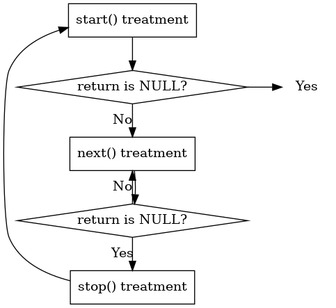

Table of Contents
- 1. Introduction
- 2. Headers
- 3. Examples
- 4. Hello World
- 5. Preliminaries
- 6. Character Device drivers
- 7. The /proc File System
- 8. sysfs: Interacting with your module
- 9. Talking To Device Files
- 10. System Calls
- 11. Blocking Processes and threads
- 12. Avoiding Collisions and Deadlocks
- 13. Replacing Print Macros
- 14. Scheduling Tasks
- 15. Interrupt Handlers
- 16. Crypto
- 17. Standardising the interfaces: The Device Model
- 18. Optimisations
- 19. Common Pitfalls
- 20. Where To Go From Here?
[[#+TITLE: The Linux Kernel Module Programming Guide
1. Introduction
The Linux Kernel Module Programming Guide is a free book; you may reproduce and/or modify it under the terms of the Open Software License, version 3.0.
This book is distributed in the hope it will be useful, but without any warranty, without even the implied warranty of merchantability or fitness for a particular purpose.
The author encourages wide distribution of this book for personal or commercial use, provided the above copyright notice remains intact and the method adheres to the provisions of the Open Software License. In summary, you may copy and distribute this book free of charge or for a profit. No explicit permission is required from the author for reproduction of this book in any medium, physical or electronic.
Derivative works and translations of this document must be placed under the Open Software License, and the original copyright notice must remain intact. If you have contributed new material to this book, you must make the material and source code available for your revisions. Please make revisions and updates available directly to the document maintainer, Peter Jay Salzman <p@dirac.org>. This will allow for the merging of updates and provide consistent revisions to the Linux community.
If you publish or distribute this book commercially, donations, royalties, and/or printed copies are greatly appreciated by the author and the Linux Documentation Project (LDP). Contributing in this way shows your support for free software and the LDP. If you have questions or comments, please contact the address above.
1.1. Authorship
The Linux Kernel Module Programming Guide was originally written for the 2.2 kernels by Ori Pomerantz. Eventually, Ori no longer had time to maintain the document. After all, the Linux kernel is a fast moving target. Peter Jay Salzman took over maintenance and updated it for the 2.4 kernels. Eventually, Peter no longer had time to follow developments with the 2.6 kernel, so Michael Burian became a co-maintainer to update the document for the 2.6 kernels. Bob Mottram updated the examples for 3.8 and later kernels, added the sysfs chapter and modified or updated other chapters.
1.2. Versioning and Notes
The Linux kernel is a moving target. There has always been a question whether the LKMPG should remove deprecated information or keep it around for historical sake. Michael Burian and I decided to create a new branch of the LKMPG for each new stable kernel version. So version LKMPG 4.12.x will address Linux kernel 4.12.x and LKMPG 2.6.x will address Linux kernel 2.6. No attempt will be made to archive historical information; a person wishing this information should read the appropriately versioned LKMPG.
The source code and discussions should apply to most architectures, but I can't promise anything.
1.3. Acknowledgements
The following people have contributed corrections or good suggestions: Ignacio Martin, David Porter, Daniele Paolo Scarpazza, Dimo Velev, Francois Audeon, Horst Schirmeier, Bob Mottram and Roman Lakeev.
1.4. What Is A Kernel Module?
So, you want to write a kernel module. You know C, you've written a few normal programs to run as processes, and now you want to get to where the real action is, to where a single wild pointer can wipe out your file system and a core dump means a reboot.
What exactly is a kernel module? Modules are pieces of code that can be loaded and unloaded into the kernel upon demand. They extend the functionality of the kernel without the need to reboot the system. For example, one type of module is the device driver, which allows the kernel to access hardware connected to the system. Without modules, we would have to build monolithic kernels and add new functionality directly into the kernel image. Besides having larger kernels, this has the disadvantage of requiring us to rebuild and reboot the kernel every time we want new functionality.
1.5. Installing some Dependencies
Linux distros provide the commands modprobe, insmod and depmod within a package. These can be installed as follows:
On Debian:
sudo apt-get install build-essential kmod
On Parabola:
sudo pacman -S gcc kmod
1.6. What Modules are in my Kernel?
To discover what modules are already loaded within your current kernel use the command lsmod.
sudo lsmod
Modules are stored within the file /proc/modules, so you can also see them with:
sudo cat /proc/modules
This can be a long list, and you might prefer to search for something particular. To search for the fat module:
sudo lsmod | grep fat
1.7. Do I need to download and compile the kernel?
For the purposes of following this guide you don't necessarily need to do that. However, it would be wise to run the examples within a test distro running on a virtual machine in order to avoid any possibility of messing up your system.
1.8. Before We Begin
Before we delve into code, there are a few issues we need to cover. Everyone's system is different and everyone has their own groove. Getting your first "hello world" program to compile and load correctly can sometimes be a trick. Rest assured, after you get over the initial hurdle of doing it for the first time, it will be smooth sailing thereafter.
- Modversioning
A module compiled for one kernel won't load if you boot a different kernel unless you enable CONFIG_MODVERSIONS in the kernel. We won't go into module versioning until later in this guide. Until we cover modversions, the examples in the guide may not work if you're running a kernel with modversioning turned on. However, most stock Linux distro kernels come with it turned on. If you're having trouble loading the modules because of versioning errors, compile a kernel with modversioning turned off.
- Using X
It is highly recommended that you extract, compile and load all the examples this guide discusses. It's also highly recommended you do this from a console. You should not be working on this stuff in X.
Modules can't print to the screen like printf() can, but they can log information and warnings, which ends up being printed on your screen, but only on a console. If you insmod a module from an xterm, the information and warnings will be logged, but only to your systemd journal. You won't see it unless you look through your journalctl. To have immediate access to this information, do all your work from the console.
2. Headers
Before you can build anything you'll need to install the header files for your kernel. On Parabola GNU/Linux:
sudo pacman -S linux-libre-headers
On Debian:
sudo apt-get update
apt-cache search linux-headers-$(uname -r)
This will tell you what kernel header files are available. Then for example:
sudo apt-get install kmod linux-headers-5.13.8-1-amd64
3. Examples
All the examples from this document are available within the examples subdirectory. The directory is created by a script which pulls the source code out from the manual. To test that they compile:
./create_examples.sh
cd examples
make
If there are any compile errors then you might have a more recent kernel version or need to install the corresponding kernel header files.
4. Hello World
4.1. The Simplest Module
Most people learning programming start out with some sort of "hello world" example. I don't know what happens to people who break with this tradition, but I think it's safer not to find out. We'll start with a series of hello world programs that demonstrate the different aspects of the basics of writing a kernel module.
Here's the simplest module possible.
Make a test directory:
mkdir -p ~/develop/kernel/hello-1
cd ~/develop/kernel/hello-1
Paste this into you favourite editor and save it as hello-1.c:
/* * hello-1.c - The simplest kernel module. */ #include <linux/module.h> /* Needed by all modules */ #include <linux/kernel.h> /* Needed for KERN_INFO */ int init_module(void) { pr_info("Hello world 1.\n"); /* * A non 0 return means init_module failed; module can't be loaded. */ return 0; } void cleanup_module(void) { pr_info("Goodbye world 1.\n"); } MODULE_LICENSE("GPL");
Now you'll need a Makefile. If you copy and paste this change the indentation to use tabs, not spaces.
obj-m += hello-1.o all: make -C /lib/modules/$(shell uname -r)/build M=$(PWD) modules clean: make -C /lib/modules/$(shell uname -r)/build M=$(PWD) clean
And finally just:
make
If all goes smoothly you should then find that you have a compiled hello-1.ko module. You can find info on it with the command:
sudo modinfo hello-1.ko
At this point the command:
sudo lsmod | grep hello
should return nothing. You can try loading your shiny new module with:
sudo insmod hello-1.ko
The dash character will get converted to an underscore, so when you again try:
sudo lsmod | grep hello
you should now see your loaded module. It can be removed again with:
sudo rmmod hello_1
Notice that the dash was replaced by an underscore. To see what just happened in the logs:
journalctl --since "1 hour ago" | grep kernel
You now know the basics of creating, compiling, installing and removing modules. Now for more of a description of how this module works.
Kernel modules must have at least two functions: a "start" (initialization) function called init_module() which is called when the module is insmoded into the kernel, and an "end" (cleanup) function called cleanup_module() which is called just before it is rmmoded. Actually, things have changed starting with kernel 2.3.13. You can now use whatever name you like for the start and end functions of a module, and you'll learn how to do this in Section 2.3. In fact, the new method is the preferred method. However, many people still use init_module() and cleanup_module() for their start and end functions.
Typically, init_module() either registers a handler for something with the kernel, or it replaces one of the kernel functions with its own code (usually code to do something and then call the original function). The cleanup_module() function is supposed to undo whatever init_module() did, so the module can be unloaded safely.
Lastly, every kernel module needs to include linux/module.h. We needed to include linux/kernel.h only for the macro expansion for the pr_alert() log level, which you'll learn about in Section 2.1.1.
- A point about coding style
Another thing which may not be immediately obvious to anyone getting started with kernel programming is that indentation within your code should be using tabs and not spaces. It's one of the coding conventions of the kernel. You may not like it, but you'll need to get used to it if you ever submit a patch upstream.
- Introducing print macros
In the beginning there was printk, usually followed by a priority such as KERN_INFO or KERN_DEBUG. More recently this can also be expressed in abbreviated form using a set of print macros, such as pr_info and pr_debug. This just saves some mindless keyboard bashing and looks a bit neater. They can be found within linux/printk.h. Take time to read through the available priority macros.
- About Compiling
Kernel modules need to be compiled a bit differently from regular userspace apps. Former kernel versions required us to care much about these settings, which are usually stored in Makefiles. Although hierarchically organized, many redundant settings accumulated in sublevel Makefiles and made them large and rather difficult to maintain. Fortunately, there is a new way of doing these things, called kbuild, and the build process for external loadable modules is now fully integrated into the standard kernel build mechanism. To learn more on how to compile modules which are not part of the official kernel (such as all the examples you'll find in this guide), see file linux/Documentation/kbuild/modules.txt.
Additional details about Makefiles for kernel modules are available in linux/Documentation/kbuild/makefiles.txt. Be sure to read this and the related files before starting to hack Makefiles. It'll probably save you lots of work.
Here's another exercise for the reader. See that comment above the return statement in init_module()? Change the return value to something negative, recompile and load the module again. What happens?
4.2. Hello and Goodbye
In early kernel versions you had to use the init_module and cleanup_module functions, as in the first hello world example, but these days you can name those anything you want by using the module_init and module_exit macros. These macros are defined in linux/init.h. The only requirement is that your init and cleanup functions must be defined before calling the those macros, otherwise you'll get compilation errors. Here's an example of this technique:
/* * hello-2.c - Demonstrating the module_init() and module_exit() macros. * This is preferred over using init_module() and cleanup_module(). */ #include <linux/module.h> /* Needed by all modules */ #include <linux/kernel.h> /* Needed for KERN_INFO */ #include <linux/init.h> /* Needed for the macros */ static int __init hello_2_init(void) { pr_info("Hello, world 2\n"); return 0; } static void __exit hello_2_exit(void) { pr_info("Goodbye, world 2\n"); } module_init(hello_2_init); module_exit(hello_2_exit); MODULE_LICENSE("GPL");
So now we have two real kernel modules under our belt. Adding another module is as simple as this:
obj-m += hello-1.o obj-m += hello-2.o all: make -C /lib/modules/$(shell uname -r)/build M=$(PWD) modules clean: make -C /lib/modules/$(shell uname -r)/build M=$(PWD) clean
Now have a look at linux/drivers/char/Makefile for a real world example. As you can see, some things get hardwired into the kernel (obj-y) but where are all those obj-m gone? Those familiar with shell scripts will easily be able to spot them. For those not, the obj-$(CONFIG_FOO) entries you see everywhere expand into obj-y or obj-m, depending on whether the CONFIG_FOO variable has been set to y or m. While we are at it, those were exactly the kind of variables that you have set in the linux/.config file, the last time when you said make menuconfig or something like that.
4.3. The __init and __exit Macros
This demonstrates a feature of kernel 2.2 and later. Notice the change in the definitions of the init and cleanup functions. The __init macro causes the init function to be discarded and its memory freed once the init function finishes for built-in drivers, but not loadable modules. If you think about when the init function is invoked, this makes perfect sense.
There is also an __initdata which works similarly to __init but for init variables rather than functions.
The __exit macro causes the omission of the function when the module is built into the kernel, and like __init, has no effect for loadable modules. Again, if you consider when the cleanup function runs, this makes complete sense; built-in drivers don't need a cleanup function, while loadable modules do.
These macros are defined in linux/init.h and serve to free up kernel memory. When you boot your kernel and see something like Freeing unused kernel memory: 236k freed, this is precisely what the kernel is freeing.
/* * hello-3.c - Illustrating the __init, __initdata and __exit macros. */ #include <linux/module.h> /* Needed by all modules */ #include <linux/kernel.h> /* Needed for KERN_INFO */ #include <linux/init.h> /* Needed for the macros */ static int hello3_data __initdata = 3; static int __init hello_3_init(void) { pr_info("Hello, world %d\n", hello3_data); return 0; } static void __exit hello_3_exit(void) { pr_info("Goodbye, world 3\n"); } module_init(hello_3_init); module_exit(hello_3_exit); MODULE_LICENSE("GPL");
4.4. Licensing and Module Documentation
Honestly, who loads or even cares about proprietary modules? If you do then you might have seen something like this:
# insmod xxxxxx.o Warning: loading xxxxxx.ko will taint the kernel: no license See http://www.tux.org/lkml/#export-tainted for information about tainted modules Module xxxxxx loaded, with warnings
You can use a few macros to indicate the license for your module. Some examples are "GPL", "GPL v2", "GPL and additional rights", "Dual BSD/GPL", "Dual MIT/GPL", "Dual MPL/GPL" and "Proprietary". They're defined within linux/module.h.
To reference what license you're using a macro is available called MODULE_LICENSE. This and a few other macros describing the module are illustrated in the below example.
/* * hello-4.c - Demonstrates module documentation. */ #include <linux/module.h> /* Needed by all modules */ #include <linux/kernel.h> /* Needed for KERN_INFO */ #include <linux/init.h> /* Needed for the macros */ MODULE_LICENSE("GPL"); MODULE_AUTHOR("Bob Mottram"); MODULE_DESCRIPTION("A sample driver"); static int __init init_hello_4(void) { pr_info("Hello, world 4\n"); return 0; } static void __exit cleanup_hello_4(void) { pr_info("Goodbye, world 4\n"); } module_init(init_hello_4); module_exit(cleanup_hello_4);
4.5. Passing Command Line Arguments to a Module
Modules can take command line arguments, but not with the argc/argv you might be used to.
To allow arguments to be passed to your module, declare the variables that will take the values of the command line arguments as global and then use the module_param() macro, (defined in linux/moduleparam.h) to set the mechanism up. At runtime, insmod will fill the variables with any command line arguments that are given, like ./insmod mymodule.ko myvariable=5. The variable declarations and macros should be placed at the beginning of the module for clarity. The example code should clear up my admittedly lousy explanation.
The module_param() macro takes 3 arguments: the name of the variable, its type and permissions for the corresponding file in sysfs. Integer types can be signed as usual or unsigned. If you'd like to use arrays of integers or strings see module_param_array() and module_param_string().
int myint = 3; module_param(myint, int, 0);
Arrays are supported too, but things are a bit different now than they were in the olden days. To keep track of the number of parameters you need to pass a pointer to a count variable as third parameter. At your option, you could also ignore the count and pass NULL instead. We show both possibilities here:
int myintarray[2]; module_param_array(myintarray, int, NULL, 0); /* not interested in count */ short myshortarray[4]; int count; module_param_array(myshortarray, short, &count, 0); /* put count into "count" variable */
A good use for this is to have the module variable's default values set, like an port or IO address. If the variables contain the default values, then perform autodetection (explained elsewhere). Otherwise, keep the current value. This will be made clear later on.
Lastly, there's a macro function, MODULE_PARM_DESC(), that is used to document arguments that the module can take. It takes two parameters: a variable name and a free form string describing that variable.
/* * hello-5.c - Demonstrates command line argument passing to a module. */ #include <linux/module.h> #include <linux/moduleparam.h> #include <linux/kernel.h> #include <linux/init.h> #include <linux/stat.h> MODULE_LICENSE("GPL"); MODULE_AUTHOR("Peter Jay Salzman"); static short int myshort = 1; static int myint = 420; static long int mylong = 9999; static char *mystring = "blah"; static int myintArray[2] = { -1, -1 }; static int arr_argc = 0; /* * module_param(foo, int, 0000) * The first param is the parameters name * The second param is it's data type * The final argument is the permissions bits, * for exposing parameters in sysfs (if non-zero) at a later stage. */ module_param(myshort, short, S_IRUSR | S_IWUSR | S_IRGRP | S_IWGRP); MODULE_PARM_DESC(myshort, "A short integer"); module_param(myint, int, S_IRUSR | S_IWUSR | S_IRGRP | S_IROTH); MODULE_PARM_DESC(myint, "An integer"); module_param(mylong, long, S_IRUSR); MODULE_PARM_DESC(mylong, "A long integer"); module_param(mystring, charp, 0000); MODULE_PARM_DESC(mystring, "A character string"); /* * module_param_array(name, type, num, perm); * The first param is the parameter's (in this case the array's) name * The second param is the data type of the elements of the array * The third argument is a pointer to the variable that will store the number * of elements of the array initialized by the user at module loading time * The fourth argument is the permission bits */ module_param_array(myintArray, int, &arr_argc, 0000); MODULE_PARM_DESC(myintArray, "An array of integers"); static int __init hello_5_init(void) { int i; pr_info("Hello, world 5\n=============\n"); pr_info("myshort is a short integer: %hd\n", myshort); pr_info("myint is an integer: %d\n", myint); pr_info("mylong is a long integer: %ld\n", mylong); pr_info("mystring is a string: %s\n", mystring); for (i = 0; i < (sizeof myintArray / sizeof (int)); i++) pr_info("myintArray[%d] = %d\n", i, myintArray[i]); pr_info("got %d arguments for myintArray.\n", arr_argc); return 0; } static void __exit hello_5_exit(void) { pr_info("Goodbye, world 5\n"); } module_init(hello_5_init); module_exit(hello_5_exit);
I would recommend playing around with this code:
# sudo insmod hello-5.ko mystring="bebop" mybyte=255 myintArray=-1 mybyte is an 8 bit integer: 255 myshort is a short integer: 1 myint is an integer: 20 mylong is a long integer: 9999 mystring is a string: bebop myintArray is -1 and 420 # rmmod hello-5 Goodbye, world 5 # sudo insmod hello-5.ko mystring="supercalifragilisticexpialidocious" \ > mybyte=256 myintArray=-1,-1 mybyte is an 8 bit integer: 0 myshort is a short integer: 1 myint is an integer: 20 mylong is a long integer: 9999 mystring is a string: supercalifragilisticexpialidocious myintArray is -1 and -1 # rmmod hello-5 Goodbye, world 5 # sudo insmod hello-5.ko mylong=hello hello-5.o: invalid argument syntax for mylong: 'h'
4.6. Modules Spanning Multiple Files
Sometimes it makes sense to divide a kernel module between several source files.
Here's an example of such a kernel module.
/* * start.c - Illustration of multi filed modules */ #include <linux/kernel.h> /* We're doing kernel work */ #include <linux/module.h> /* Specifically, a module */ int init_module(void) { pr_info("Hello, world - this is the kernel speaking\n"); return 0; } MODULE_LICENSE("GPL");
The next file:
/* * stop.c - Illustration of multi filed modules */ #include <linux/kernel.h> /* We're doing kernel work */ #include <linux/module.h> /* Specifically, a module */ void cleanup_module() { pr_info("Short is the life of a kernel module\n"); } MODULE_LICENSE("GPL");
And finally, the makefile:
obj-m += hello-1.o obj-m += hello-2.o obj-m += hello-3.o obj-m += hello-4.o obj-m += hello-5.o obj-m += startstop.o startstop-objs := start.o stop.o all: make -C /lib/modules/$(shell uname -r)/build M=$(PWD) modules clean: make -C /lib/modules/$(shell uname -r)/build M=$(PWD) clean
This is the complete makefile for all the examples we've seen so far. The first five lines are nothing special, but for the last example we'll need two lines. First we invent an object name for our combined module, second we tell make what object files are part of that module.
4.7. Building modules for a precompiled kernel
Obviously, we strongly suggest you to recompile your kernel, so that you can enable a number of useful debugging features, such as forced module unloading (MODULE_FORCE_UNLOAD): when this option is enabled, you can force the kernel to unload a module even when it believes it is unsafe, via a sudo rmmod -f module command. This option can save you a lot of time and a number of reboots during the development of a module. If you don't want to recompile your kernel then you should consider running the examples within a test distro on a virtual machine. If you mess anything up then you can easily reboot or restore the VM.
There are a number of cases in which you may want to load your module into a precompiled running kernel, such as the ones shipped with common Linux distros, or a kernel you have compiled in the past. In certain circumstances you could require to compile and insert a module into a running kernel which you are not allowed to recompile, or on a machine that you prefer not to reboot. If you can't think of a case that will force you to use modules for a precompiled kernel you might want to skip this and treat the rest of this chapter as a big footnote.
Now, if you just install a kernel source tree, use it to compile your kernel module and you try to insert your module into the kernel, in most cases you would obtain an error as follows:
insmod: error inserting 'poet_atkm.ko': -1 Invalid module format
Less cryptical information are logged to the systemd journal:
Jun 4 22:07:54 localhost kernel: poet_atkm: version magic '2.6.5-1.358custom 686 REGPARM 4KSTACKS gcc-3.3' should be '2.6.5-1.358 686 REGPARM 4KSTACKS gcc-3.3'
In other words, your kernel refuses to accept your module because version strings (more precisely, version magics) do not match. Incidentally, version magics are stored in the module object in the form of a static string, starting with vermagic:. Version data are inserted in your module when it is linked against the init/vermagic.o file. To inspect version magics and other strings stored in a given module, issue the modinfo module.ko command:
# sudo modinfo hello-4.ko license: GPL author: Bob Mottram <bob@libreserver.org> description: A sample driver vermagic: 5.13.8-1.358 amd64 REGPARM 4KSTACKS gcc-4.9.2 depends:
To overcome this problem we could resort to the –force-vermagic option, but this solution is potentially unsafe, and unquestionably inacceptable in production modules. Consequently, we want to compile our module in an environment which was identical to the one in which our precompiled kernel was built. How to do this, is the subject of the remainder of this chapter.
First of all, make sure that a kernel source tree is available, having exactly the same version as your current kernel. Then, find the configuration file which was used to compile your precompiled kernel. Usually, this is available in your current boot directory, under a name like config-2.6.x. You may just want to copy it to your kernel source tree: *cp /boot/config-`uname -r` /usr/src/linux-`uname -r`.config*.
Let's focus again on the previous error message: a closer look at the version magic strings suggests that, even with two configuration files which are exactly the same, a slight difference in the version magic could be possible, and it is sufficient to prevent insertion of the module into the kernel. That slight difference, namely the custom string which appears in the module's version magic and not in the kernel's one, is due to a modification with respect to the original, in the makefile that some distros include. Then, examine your /usr/src/linux/Makefile, and make sure that the specified version information matches exactly the one used for your current kernel. For example, you makefile could start as follows:
VERSION = 4 PATCHLEVEL = 7 SUBLEVEL = 4 EXTRAVERSION = -1.358custom
In this case, you need to restore the value of symbol EXTRAVERSION to -1.358. We suggest to keep a backup copy of the makefile used to compile your kernel available in /lib/modules/5.13.8-1.358/build. A simple cp /lib/modules/`uname-r`/build/Makefile /usr/src/linux-`uname -r` should suffice. Additionally, if you already started a kernel build with the previous (wrong) Makefile, you should also rerun make, or directly modify symbol UTS_RELEASE in file /usr/src/linux-5.13.8/include/linux/version.h according to contents of file /lib/modules/5.13.8/build/include/linux/version.h, or overwrite the latter with the first.
Now, please run make to update configuration and version headers and objects:
# make CHK include/linux/version.h UPD include/linux/version.h SYMLINK include/asm -> include/asm-i386 SPLIT include/linux/autoconf.h -> include/config/* HOSTCC scripts/basic/fixdep HOSTCC scripts/basic/split-include HOSTCC scripts/basic/docproc HOSTCC scripts/conmakehash HOSTCC scripts/kallsyms CC scripts/empty.o
If you do not desire to actually compile the kernel, you can interrupt the build process (CTRL-C) just after the SPLIT line, because at that time, the files you need will be are ready. Now you can turn back to the directory of your module and compile it: It will be built exactly according your current kernel settings, and it will load into it without any errors.
5. Preliminaries
5.1. How modules begin and end
A program usually begins with a main() function, executes a bunch of instructions and terminates upon completion of those instructions. Kernel modules work a bit differently. A module always begin with either the init_module or the function you specify with module_init call. This is the entry function for modules; it tells the kernel what functionality the module provides and sets up the kernel to run the module's functions when they're needed. Once it does this, entry function returns and the module does nothing until the kernel wants to do something with the code that the module provides.
All modules end by calling either cleanup_module or the function you specify with the module_exit call. This is the exit function for modules; it undoes whatever entry function did. It unregisters the functionality that the entry function registered.
Every module must have an entry function and an exit function. Since there's more than one way to specify entry and exit functions, I'll try my best to use the terms `entry function' and `exit function', but if I slip and simply refer to them as init_module and cleanup_module, I think you'll know what I mean.
5.2. Functions available to modules
Programmers use functions they don't define all the time. A prime example of this is printf(). You use these library functions which are provided by the standard C library, libc. The definitions for these functions don't actually enter your program until the linking stage, which insures that the code (for printf() for example) is available, and fixes the call instruction to point to that code.
Kernel modules are different here, too. In the hello world example, you might have noticed that we used a function, pr_info() but didn't include a standard I/O library. That's because modules are object files whose symbols get resolved upon insmod'ing. The definition for the symbols comes from the kernel itself; the only external functions you can use are the ones provided by the kernel. If you're curious about what symbols have been exported by your kernel, take a look at /proc/kallsyms.
One point to keep in mind is the difference between library functions and system calls. Library functions are higher level, run completely in user space and provide a more convenient interface for the programmer to the functions that do the real work — system calls. System calls run in kernel mode on the user's behalf and are provided by the kernel itself. The library function printf() may look like a very general printing function, but all it really does is format the data into strings and write the string data using the low-level system call write(), which then sends the data to standard output.
Would you like to see what system calls are made by printf()? It's easy! Compile the following program:
#include <stdio.h> int main(void) { printf("hello"); return 0; }
with gcc -Wall -o hello hello.c. Run the exectable with strace ./hello. Are you impressed? Every line you see corresponds to a system call. strace is a handy program that gives you details about what system calls a program is making, including which call is made, what its arguments are and what it returns. It's an invaluable tool for figuring out things like what files a program is trying to access. Towards the end, you'll see a line which looks like write (1, "hello", 5hello). There it is. The face behind the printf() mask. You may not be familiar with write, since most people use library functions for file I/O (like fopen, fputs, fclose). If that's the case, try looking at man 2 write. The 2nd man section is devoted to system calls (like kill() and read()). The 3rd man section is devoted to library calls, which you would probably be more familiar with (like cosh() and random()).
You can even write modules to replace the kernel's system calls, which we'll do shortly. Crackers often make use of this sort of thing for backdoors or trojans, but you can write your own modules to do more benign things, like have the kernel write Tee hee, that tickles! everytime someone tries to delete a file on your system.
5.3. User Space vs Kernel Space
A kernel is all about access to resources, whether the resource in question happens to be a video card, a hard drive or even memory. Programs often compete for the same resource. As I just saved this document, updatedb started updating the locate database. My vim session and updatedb are both using the hard drive concurrently. The kernel needs to keep things orderly, and not give users access to resources whenever they feel like it. To this end, a CPU can run in different modes. Each mode gives a different level of freedom to do what you want on the system. The Intel 80386 architecture had 4 of these modes, which were called rings. Unix uses only two rings; the highest ring (ring 0, also known as `supervisor mode' where everything is allowed to happen) and the lowest ring, which is called `user mode'.
Recall the discussion about library functions vs system calls. Typically, you use a library function in user mode. The library function calls one or more system calls, and these system calls execute on the library function's behalf, but do so in supervisor mode since they are part of the kernel itself. Once the system call completes its task, it returns and execution gets transfered back to user mode.
5.4. Name Space
When you write a small C program, you use variables which are convenient and make sense to the reader. If, on the other hand, you're writing routines which will be part of a bigger problem, any global variables you have are part of a community of other peoples' global variables; some of the variable names can clash. When a program has lots of global variables which aren't meaningful enough to be distinguished, you get namespace pollution. In large projects, effort must be made to remember reserved names, and to find ways to develop a scheme for naming unique variable names and symbols.
When writing kernel code, even the smallest module will be linked against the entire kernel, so this is definitely an issue. The best way to deal with this is to declare all your variables as static and to use a well-defined prefix for your symbols. By convention, all kernel prefixes are lowercase. If you don't want to declare everything as static, another option is to declare a symbol table and register it with a kernel. We'll get to this later.
The file /proc/kallsyms holds all the symbols that the kernel knows about and which are therefore accessible to your modules since they share the kernel's codespace.
5.5. Code space
Memory management is a very complicated subject and the majority of O'Reilly's "Understanding The Linux Kernel" exclusively covers memory management! We're not setting out to be experts on memory managements, but we do need to know a couple of facts to even begin worrying about writing real modules.
If you haven't thought about what a segfault really means, you may be surprised to hear that pointers don't actually point to memory locations. Not real ones, anyway. When a process is created, the kernel sets aside a portion of real physical memory and hands it to the process to use for its executing code, variables, stack, heap and other things which a computer scientist would know about. This memory begins with 0x00000000 and extends up to whatever it needs to be. Since the memory space for any two processes don't overlap, every process that can access a memory address, say 0xbffff978, would be accessing a different location in real physical memory! The processes would be accessing an index named 0xbffff978 which points to some kind of offset into the region of memory set aside for that particular process. For the most part, a process like our Hello, World program can't access the space of another process, although there are ways which we'll talk about later.
The kernel has its own space of memory as well. Since a module is code which can be dynamically inserted and removed in the kernel (as opposed to a semi-autonomous object), it shares the kernel's codespace rather than having its own. Therefore, if your module segfaults, the kernel segfaults. And if you start writing over data because of an off-by-one error, then you're trampling on kernel data (or code). This is even worse than it sounds, so try your best to be careful.
By the way, I would like to point out that the above discussion is true for any operating system which uses a monolithic kernel. This isn't quite the same thing as "building all your modules into the kernel", although the idea is the same. There are things called microkernels which have modules which get their own codespace. The GNU Hurd and the Magenta kernel of Google Fuchsia are two examples of a microkernel.
5.6. Device Drivers
One class of module is the device driver, which provides functionality for hardware like a serial port. On unix, each piece of hardware is represented by a file located in /dev named a device file which provides the means to communicate with the hardware. The device driver provides the communication on behalf of a user program. So the es1370.o sound card device driver might connect the /dev/sound device file to the Ensoniq IS1370 sound card. A userspace program like mp3blaster can use /dev/sound without ever knowing what kind of sound card is installed.
- Major and Minor Numbers
Let's look at some device files. Here are device files which represent the first three partitions on the primary master IDE hard drive:
# ls -l /dev/hda[1-3] brw-rw---- 1 root disk 3, 1 Jul 5 2000 /dev/hda1 brw-rw---- 1 root disk 3, 2 Jul 5 2000 /dev/hda2 brw-rw---- 1 root disk 3, 3 Jul 5 2000 /dev/hda3
Notice the column of numbers separated by a comma? The first number is called the device's major number. The second number is the minor number. The major number tells you which driver is used to access the hardware. Each driver is assigned a unique major number; all device files with the same major number are controlled by the same driver. All the above major numbers are 3, because they're all controlled by the same driver.
The minor number is used by the driver to distinguish between the various hardware it controls. Returning to the example above, although all three devices are handled by the same driver they have unique minor numbers because the driver sees them as being different pieces of hardware.
Devices are divided into two types: character devices and block devices. The difference is that block devices have a buffer for requests, so they can choose the best order in which to respond to the requests. This is important in the case of storage devices, where it's faster to read or write sectors which are close to each other, rather than those which are further apart. Another difference is that block devices can only accept input and return output in blocks (whose size can vary according to the device), whereas character devices are allowed to use as many or as few bytes as they like. Most devices in the world are character, because they don't need this type of buffering, and they don't operate with a fixed block size. You can tell whether a device file is for a block device or a character device by looking at the first character in the output of ls -l. If it's `b' then it's a block device, and if it's `c' then it's a character device. The devices you see above are block devices. Here are some character devices (the serial ports):
crw-rw---- 1 root dial 4, 64 Feb 18 23:34 /dev/ttyS0 crw-r----- 1 root dial 4, 65 Nov 17 10:26 /dev/ttyS1 crw-rw---- 1 root dial 4, 66 Jul 5 2000 /dev/ttyS2 crw-rw---- 1 root dial 4, 67 Jul 5 2000 /dev/ttyS3
If you want to see which major numbers have been assigned, you can look at /usr/src/linux/Documentation/devices.txt.
When the system was installed, all of those device files were created by the mknod command. To create a new char device named `coffee' with major/minor number 12 and 2, simply do mknod /dev/coffee c 12 2. You don't have to put your device files into /dev, but it's done by convention. Linus put his device files in /dev, and so should you. However, when creating a device file for testing purposes, it's probably OK to place it in your working directory where you compile the kernel module. Just be sure to put it in the right place when you're done writing the device driver.
I would like to make a few last points which are implicit from the above discussion, but I'd like to make them explicit just in case. When a device file is accessed, the kernel uses the major number of the file to determine which driver should be used to handle the access. This means that the kernel doesn't really need to use or even know about the minor number. The driver itself is the only thing that cares about the minor number. It uses the minor number to distinguish between different pieces of hardware.
By the way, when I say "hardware", I mean something a bit more abstract than a PCI card that you can hold in your hand. Look at these two device files:
% ls -l /dev/sda /dev/sdb brw-rw---- 1 root disk 8, 0 Jan 3 09:02 /dev/sda brw-rw---- 1 root disk 8, 16 Jan 3 09:02 /dev/sdb
By now you can look at these two device files and know instantly that they are block devices and are handled by same driver (block major 8). Sometimes two device files with the same major but different minor number can actually represent the same piece of physical hardware. So just be aware that the word "hardware" in our discussion can mean something very abstract.
6. Character Device drivers
6.1. The proc_ops Structure
The proc_ops structure is defined in /usr/include/linux/fs.h, and holds pointers to functions defined by the driver that perform various operations on the device. Each field of the structure corresponds to the address of some function defined by the driver to handle a requested operation.
For example, every character driver needs to define a function that reads from the device. The proc_ops structure holds the address of the module's function that performs that operation. Here is what the definition looks like for kernel 3.0:
struct proc_ops { struct module *owner; loff_t (*llseek) (struct file *, loff_t, int); ssize_t (*read) (struct file *, char __user *, size_t, loff_t *); ssize_t (*write) (struct file *, const char __user *, size_t, loff_t *); ssize_t (*aio_read) (struct kiocb *, const struct iovec *, unsigned long, loff_t); ssize_t (*aio_write) (struct kiocb *, const struct iovec *, unsigned long, loff_t); int (*iterate) (struct file *, struct dir_context *); unsigned int (*poll) (struct file *, struct poll_table_struct *); long (*unlocked_ioctl) (struct file *, unsigned int, unsigned long); long (*compat_ioctl) (struct file *, unsigned int, unsigned long); int (*mmap) (struct file *, struct vm_area_struct *); int (*open) (struct inode *, struct file *); int (*flush) (struct file *, fl_owner_t id); int (*release) (struct inode *, struct file *); int (*fsync) (struct file *, loff_t, loff_t, int datasync); int (*aio_fsync) (struct kiocb *, int datasync); int (*fasync) (int, struct file *, int); int (*lock) (struct file *, int, struct file_lock *); ssize_t (*sendpage) (struct file *, struct page *, int, size_t, loff_t *, int); unsigned long (*get_unmapped_area)(struct file *, unsigned long, unsigned long, unsigned long, unsigned long); int (*check_flags)(int); int (*flock) (struct file *, int, struct file_lock *); ssize_t (*splice_write)(struct pipe_inode_info *, struct file *, loff_t *, size_t, unsigned int); ssize_t (*splice_read)(struct file *, loff_t *, struct pipe_inode_info *, size_t, unsigned int); int (*setlease)(struct file *, long, struct file_lock **); long (*fallocate)(struct file *file, int mode, loff_t offset, loff_t len); int (*show_fdinfo)(struct seq_file *m, struct file *f); };
Some operations are not implemented by a driver. For example, a driver that handles a video card won't need to read from a directory structure. The corresponding entries in the proc_ops structure should be set to NULL.
There is a gcc extension that makes assigning to this structure more convenient. You'll see it in modern drivers, and may catch you by surprise. This is what the new way of assigning to the structure looks like:
struct proc_ops fops = { proc_read: device_read, proc_write: device_write, proc_open: device_open, proc_release: device_release };
However, there's also a C99 way of assigning to elements of a structure, and this is definitely preferred over using the GNU extension. The version of gcc the author used when writing this, 2.95, supports the new C99 syntax. You should use this syntax in case someone wants to port your driver. It will help with compatibility:
struct proc_ops fops = { .proc_read = device_read, .proc_write = device_write, .proc_open = device_open, .proc_release = device_release };
The meaning is clear, and you should be aware that any member of the structure which you don't explicitly assign will be initialized to NULL by gcc.
An instance of struct proc_ops containing pointers to functions that are used to implement read, write, open, … syscalls is commonly named fops.
6.2. The file structure
Each device is represented in the kernel by a file structure, which is defined in linux/fs.h. Be aware that a file is a kernel level structure and never appears in a user space program. It's not the same thing as a FILE, which is defined by glibc and would never appear in a kernel space function. Also, its name is a bit misleading; it represents an abstract open `file', not a file on a disk, which is represented by a structure named inode.
An instance of struct file is commonly named filp. You'll also see it refered to as struct file file. Resist the temptation.
Go ahead and look at the definition of file. Most of the entries you see, like struct dentry aren't used by device drivers, and you can ignore them. This is because drivers don't fill file directly; they only use structures contained in file which are created elsewhere.
6.3. Registering A Device
As discussed earlier, char devices are accessed through device files, usually located in /dev. This is by convention. When writing a driver, it's OK to put the device file in your current directory. Just make sure you place it in /dev for a production driver. The major number tells you which driver handles which device file. The minor number is used only by the driver itself to differentiate which device it's operating on, just in case the driver handles more than one device.
Adding a driver to your system means registering it with the kernel. This is synonymous with assigning it a major number during the module's initialization. You do this by using the register_chrdev function, defined by linux/fs.h.
int register_chrdev(unsigned int major, const char *name, struct proc_ops *fops);
where unsigned int major is the major number you want to request, const char *name is the name of the device as it'll appear in /proc/devices and struct proc_ops *fops is a pointer to the proc_ops table for your driver. A negative return value means the registration failed. Note that we didn't pass the minor number to register_chrdev. That's because the kernel doesn't care about the minor number; only our driver uses it.
Now the question is, how do you get a major number without hijacking one that's already in use? The easiest way would be to look through Documentation /devices.txt and pick an unused one. That's a bad way of doing things because you'll never be sure if the number you picked will be assigned later. The answer is that you can ask the kernel to assign you a dynamic major number.
If you pass a major number of 0 to register_chrdev, the return value will be the dynamically allocated major number. The downside is that you can't make a device file in advance, since you don't know what the major number will be. There are a couple of ways to do this. First, the driver itself can print the newly assigned number and we can make the device file by hand. Second, the newly registered device will have an entry in /proc/devices, and we can either make the device file by hand or write a shell script to read the file in and make the device file. The third method is we can have our driver make the the device file using the device_create function after a successful registration and device_destroy during the call to cleanup_module.
6.4. Unregistering A Device
We can't allow the kernel module to be rmmod'ed whenever root feels like it. If the device file is opened by a process and then we remove the kernel module, using the file would cause a call to the memory location where the appropriate function (read/write) used to be. If we're lucky, no other code was loaded there, and we'll get an ugly error message. If we're unlucky, another kernel module was loaded into the same location, which means a jump into the middle of another function within the kernel. The results of this would be impossible to predict, but they can't be very positive.
Normally, when you don't want to allow something, you return an error code (a negative number) from the function which is supposed to do it. With cleanup_module that's impossible because it's a void function. However, there's a counter which keeps track of how many processes are using your module. You can see what it's value is by looking at the 3rd field of /proc/modules. If this number isn't zero, rmmod will fail. Note that you don't have to check the counter from within cleanup_module because the check will be performed for you by the system call sys_delete_module, defined in linux/module.c. You shouldn't use this counter directly, but there are functions defined in linux/module.h which let you increase, decrease and display this counter:
- try_module_get(THIS_MODULE): Increment the use count.
- module_put(THIS_MODULE): Decrement the use count.
It's important to keep the counter accurate; if you ever do lose track of the correct usage count, you'll never be able to unload the module; it's now reboot time, boys and girls. This is bound to happen to you sooner or later during a module's development.
6.5. chardev.c
The next code sample creates a char driver named chardev. You can cat its device file.
cat /proc/devices
(or open the file with a program) and the driver will put the number of times the device file has been read from into the file. We don't support writing to the file (like echo "hi" > /dev/hello), but catch these attempts and tell the user that the operation isn't supported. Don't worry if you don't see what we do with the data we read into the buffer; we don't do much with it. We simply read in the data and print a message acknowledging that we received it.
/* * chardev.c: Creates a read-only char device that says how many times * you've read from the dev file */ #include <linux/kernel.h> #include <linux/module.h> #include <linux/fs.h> #include <linux/init.h> #include <linux/delay.h> #include <linux/device.h> #include <linux/irq.h> #include <asm/uaccess.h> #include <asm/irq.h> #include <asm/io.h> #include <linux/poll.h> #include <linux/cdev.h> /* * Prototypes - this would normally go in a .h file */ int init_module(void); void cleanup_module(void); static int device_open(struct inode *, struct file *); static int device_release(struct inode *, struct file *); static ssize_t device_read(struct file *, char *, size_t, loff_t *); static ssize_t device_write(struct file *, const char *, size_t, loff_t *); #define SUCCESS 0 #define DEVICE_NAME "chardev" /* Dev name as it appears in /proc/devices */ #define BUF_LEN 80 /* Max length of the message from the device */ /* * Global variables are declared as static, so are global within the file. */ static int Major; /* Major number assigned to our device driver */ static int Device_Open = 0; /* Is device open? * Used to prevent multiple access to device */ static char msg[BUF_LEN]; /* The msg the device will give when asked */ static char *msg_Ptr; static struct class *cls; static struct file_operations chardev_fops = { .read = device_read, .write = device_write, .open = device_open, .release = device_release }; /* * This function is called when the module is loaded */ int init_module(void) { Major = register_chrdev(0, DEVICE_NAME, &chardev_fops); if (Major < 0) { pr_alert("Registering char device failed with %d\n", Major); return Major; } pr_info("I was assigned major number %d.\n", Major); cls = class_create(THIS_MODULE, DEVICE_NAME); device_create(cls, NULL, MKDEV(Major, 0), NULL, DEVICE_NAME); pr_info("Device created on /dev/%s\n", DEVICE_NAME); return SUCCESS; } /* * This function is called when the module is unloaded */ void cleanup_module(void) { device_destroy(cls, MKDEV(Major, 0)); class_destroy(cls); /* * Unregister the device */ unregister_chrdev(Major, DEVICE_NAME); } /* * Methods */ /* * Called when a process tries to open the device file, like * "cat /dev/mycharfile" */ static int device_open(struct inode *inode, struct file *file) { static int counter = 0; if (Device_Open) return -EBUSY; Device_Open++; sprintf(msg, "I already told you %d times Hello world!\n", counter++); msg_Ptr = msg; try_module_get(THIS_MODULE); return SUCCESS; } /* * Called when a process closes the device file. */ static int device_release(struct inode *inode, struct file *file) { Device_Open--; /* We're now ready for our next caller */ /* * Decrement the usage count, or else once you opened the file, you'll * never get get rid of the module. */ module_put(THIS_MODULE); return SUCCESS; } /* * Called when a process, which already opened the dev file, attempts to * read from it. */ static ssize_t device_read(struct file *filp, /* see include/linux/fs.h */ char *buffer, /* buffer to fill with data */ size_t length, /* length of the buffer */ loff_t * offset) { /* * Number of bytes actually written to the buffer */ int bytes_read = 0; /* * If we're at the end of the message, * return 0 signifying end of file */ if (*msg_Ptr == 0) return 0; /* * Actually put the data into the buffer */ while (length && *msg_Ptr) { /* * The buffer is in the user data segment, not the kernel * segment so "*" assignment won't work. We have to use * put_user which copies data from the kernel data segment to * the user data segment. */ put_user(*(msg_Ptr++), buffer++); length--; bytes_read++; } /* * Most read functions return the number of bytes put into the buffer */ return bytes_read; } /* * Called when a process writes to dev file: echo "hi" > /dev/hello */ static ssize_t device_write(struct file *filp, const char *buff, size_t len, loff_t * off) { pr_alert("Sorry, this operation isn't supported.\n"); return -EINVAL; } MODULE_LICENSE("GPL");
6.6. Writing Modules for Multiple Kernel Versions
The system calls, which are the major interface the kernel shows to the processes, generally stay the same across versions. A new system call may be added, but usually the old ones will behave exactly like they used to. This is necessary for backward compatibility – a new kernel version is not supposed to break regular processes. In most cases, the device files will also remain the same. On the other hand, the internal interfaces within the kernel can and do change between versions.
The Linux kernel versions are divided between the stable versions (n.$<\(even number\)>$.m) and the development versions (n.$<\(odd number\)>$.m). The development versions include all the cool new ideas, including those which will be considered a mistake, or reimplemented, in the next version. As a result, you can't trust the interface to remain the same in those versions (which is why I don't bother to support them in this book, it's too much work and it would become dated too quickly). In the stable versions, on the other hand, we can expect the interface to remain the same regardless of the bug fix version (the m number).
There are differences between different kernel versions, and if you want to support multiple kernel versions, you'll find yourself having to code conditional compilation directives. The way to do this to compare the macro LINUX_VERSION_CODE to the macro KERNEL_VERSION. In version a.b.c of the kernel, the value of this macro would be \(2^{16}a+2^{8}b+c\).
While previous versions of this guide showed how you can write backward compatible code with such constructs in great detail, we decided to break with this tradition for the better. People interested in doing such might now use a LKMPG with a version matching to their kernel. We decided to version the LKMPG like the kernel, at least as far as major and minor number are concerned. We use the patchlevel for our own versioning so use LKMPG version 2.4.x for kernels 2.4.x, use LKMPG version 2.6.x for kernels 2.6.x and so on. Also make sure that you always use current, up to date versions of both, kernel and guide.
You might already have noticed that recent kernels look different. In case you haven't they look like 2.6.x.y now. The meaning of the first three items basically stays the same, but a subpatchlevel has been added and will indicate security fixes till the next stable patchlevel is out. So people can choose between a stable tree with security updates and use the latest kernel as developer tree. Search the kernel mailing list archives if you're interested in the full story.
7. The /proc File System
In Linux, there is an additional mechanism for the kernel and kernel modules to send information to processes — the /proc file system. Originally designed to allow easy access to information about processes (hence the name), it is now used by every bit of the kernel which has something interesting to report, such as /proc/modules which provides the list of modules and /proc/meminfo which stats memory usage statistics.
The method to use the proc file system is very similar to the one used with device drivers — a structure is created with all the information needed for the /proc file, including pointers to any handler functions (in our case there is only one, the one called when somebody attempts to read from the /proc file). Then, init_module registers the structure with the kernel and cleanup_module unregisters it.
Normal file systems are located on a disk, rather than just in memory (which is where /proc is), and in that case the inode number is a pointer to a disk location where the file's index-node (inode for short) is located. The inode contains information about the file, for example the file's permissions, together with a pointer to the disk location or locations where the file's data can be found.
Because we don't get called when the file is opened or closed, there's nowhere for us to put try_module_get and try_module_put in this module, and if the file is opened and then the module is removed, there's no way to avoid the consequences.
Here a simple example showing how to use a /proc file. This is the HelloWorld for the /proc filesystem. There are three parts: create the file proc helloworld in the function init_module, return a value (and a buffer) when the file /proc/helloworld is read in the callback function procfile_read, and delete the file /proc/helloworld in the function cleanup_module.
The /proc/helloworld is created when the module is loaded with the function proc_create. The return value is a struct proc_dir_entry , and it will be used to configure the file /proc/helloworld (for example, the owner of this file). A null return value means that the creation has failed.
Each time, everytime the file /proc/helloworld is read, the function procfile_read is called. Two parameters of this function are very important: the buffer (the first parameter) and the offset (the third one). The content of the buffer will be returned to the application which read it (for example the cat command). The offset is the current position in the file. If the return value of the function isn't null, then this function is called again. So be careful with this function, if it never returns zero, the read function is called endlessly.
# cat /proc/helloworld HelloWorld!
/* procfs1.c */ #include <linux/module.h> #include <linux/kernel.h> #include <linux/proc_fs.h> #include <linux/uaccess.h> #define procfs_name "helloworld" struct proc_dir_entry *Our_Proc_File; ssize_t procfile_read(struct file *filePointer,char *buffer, size_t buffer_length, loff_t * offset) { int ret=0; if(strlen(buffer) ==0) { pr_info("procfile read %s\n",filePointer->f_path.dentry->d_name.name); ret=copy_to_user(buffer,"HelloWorld!\n",sizeof("HelloWorld!\n")); ret=sizeof("HelloWorld!\n"); } return ret; } static const struct proc_ops proc_file_fops = { .proc_read = procfile_read, }; int init_module() { Our_Proc_File = proc_create(procfs_name,0644,NULL,&proc_file_fops); if(NULL==Our_Proc_File) { proc_remove(Our_Proc_File); pr_alert("Error:Could not initialize /proc/%s\n",procfs_name); return -ENOMEM; } pr_info("/proc/%s created\n", procfs_name); return 0; } void cleanup_module() { proc_remove(Our_Proc_File); pr_info("/proc/%s removed\n", procfs_name); } MODULE_LICENSE("GPL");
7.1. Read and Write a /proc File
We have seen a very simple example for a /proc file where we only read the file /proc/helloworld. It's also possible to write in a /proc file. It works the same way as read, a function is called when the /proc file is written. But there is a little difference with read, data comes from user, so you have to import data from user space to kernel space (with copy_from_user or get_user)
The reason for copy_from_user or get_user is that Linux memory (on Intel architecture, it may be different under some other processors) is segmented. This means that a pointer, by itself, does not reference a unique location in memory, only a location in a memory segment, and you need to know which memory segment it is to be able to use it. There is one memory segment for the kernel, and one for each of the processes.
The only memory segment accessible to a process is its own, so when writing regular programs to run as processes, there's no need to worry about segments. When you write a kernel module, normally you want to access the kernel memory segment, which is handled automatically by the system. However, when the content of a memory buffer needs to be passed between the currently running process and the kernel, the kernel function receives a pointer to the memory buffer which is in the process segment. The put_user and get_user macros allow you to access that memory. These functions handle only one caracter, you can handle several caracters with copy_to_user and copy_from_user. As the buffer (in read or write function) is in kernel space, for write function you need to import data because it comes from user space, but not for the read function because data is already in kernel space.
/** * procfs2.c - create a "file" in /proc * */ #include <linux/module.h> /* Specifically, a module */ #include <linux/kernel.h> /* We're doing kernel work */ #include <linux/proc_fs.h> /* Necessary because we use the proc fs */ #include <linux/uaccess.h> /* for copy_from_user */ #define PROCFS_MAX_SIZE 1024 #define PROCFS_NAME "buffer1k" /** * This structure hold information about the /proc file * */ static struct proc_dir_entry *Our_Proc_File; /** * The buffer used to store character for this module * */ static char procfs_buffer[PROCFS_MAX_SIZE]; /** * The size of the buffer * */ static unsigned long procfs_buffer_size = 0; /** * This function is called then the /proc file is read * */ ssize_t procfile_read(struct file *filePointer,char *buffer, size_t buffer_length, loff_t * offset) { int ret=0; if(strlen(buffer) ==0) { pr_info("procfile read %s\n",filePointer->f_path.dentry->d_name.name); ret=copy_to_user(buffer,"HelloWorld!\n",sizeof("HelloWorld!\n")); ret=sizeof("HelloWorld!\n"); } return ret; } /** * This function is called with the /proc file is written * */ static ssize_t procfile_write(struct file *file, const char *buff, size_t len, loff_t *off) { procfs_buffer_size = len; if (procfs_buffer_size > PROCFS_MAX_SIZE) procfs_buffer_size = PROCFS_MAX_SIZE; if (copy_from_user(procfs_buffer, buff, procfs_buffer_size)) return -EFAULT; procfs_buffer[procfs_buffer_size] = '\0'; return procfs_buffer_size; } static const struct proc_ops proc_file_fops = { .proc_read = procfile_read, .proc_write = procfile_write, }; /** *This function is called when the module is loaded * */ int init_module() { Our_Proc_File = proc_create(PROCFS_NAME,0644,NULL,&proc_file_fops); if(NULL==Our_Proc_File) { proc_remove(Our_Proc_File); pr_alert("Error:Could not initialize /proc/%s\n",PROCFS_NAME); return -ENOMEM; } pr_info("/proc/%s created\n", PROCFS_NAME); return 0; } /** *This function is called when the module is unloaded * */ void cleanup_module() { proc_remove(Our_Proc_File); pr_info("/proc/%s removed\n", PROCFS_NAME); } MODULE_LICENSE("GPL");
7.2. Manage /proc file with standard filesystem
We have seen how to read and write a /proc file with the /proc interface. But it's also possible to manage /proc file with inodes. The main concern is to use advanced functions, like permissions.
In Linux, there is a standard mechanism for file system registration. Since every file system has to have its own functions to handle inode and file operations, there is a special structure to hold pointers to all those functions, struct inode_operations, which includes a pointer to struct proc_ops.
The difference between file and inode operations is that file operations deal with the file itself whereas inode operations deal with ways of referencing the file, such as creating links to it.
In /proc, whenever we register a new file, we're allowed to specify which struct inode_operations will be used to access to it. This is the mechanism we use, a struct inode_operations which includes a pointer to a struct proc_ops which includes pointers to our procfs_read and procfs_write functions.
Another interesting point here is the module_permission function. This function is called whenever a process tries to do something with the /proc file, and it can decide whether to allow access or not. Right now it is only based on the operation and the uid of the current user (as available in current, a pointer to a structure which includes information on the currently running process), but it could be based on anything we like, such as what other processes are doing with the same file, the time of day, or the last input we received.
It's important to note that the standard roles of read and write are reversed in the kernel. Read functions are used for output, whereas write functions are used for input. The reason for that is that read and write refer to the user's point of view — if a process reads something from the kernel, then the kernel needs to output it, and if a process writes something to the kernel, then the kernel receives it as input.
/* procfs3.c */ #include <linux/kernel.h> #include <linux/module.h> #include <linux/proc_fs.h> #include <linux/sched.h> #include <linux/uaccess.h> #define PROCFS_MAX_SIZE 2048 #define PROCFS_ENTRY_FILENAME "buffer2k" struct proc_dir_entry *Our_Proc_File; static char procfs_buffer[PROCFS_MAX_SIZE]; static unsigned long procfs_buffer_size = 0; static ssize_t procfs_read(struct file *filp, char *buffer, size_t length, loff_t *offset) { static int finished = 0; if(finished) { pr_debug("procfs_read: END\n"); finished = 0; return 0; } finished = 1; if(copy_to_user(buffer, procfs_buffer, procfs_buffer_size)) return -EFAULT; pr_debug("procfs_read: read %lu bytes\n", procfs_buffer_size); return procfs_buffer_size; } static ssize_t procfs_write(struct file *file, const char *buffer, size_t len, loff_t *off) { if(len>PROCFS_MAX_SIZE) procfs_buffer_size = PROCFS_MAX_SIZE; else procfs_buffer_size = len; if(copy_from_user(procfs_buffer, buffer, procfs_buffer_size)) return -EFAULT; pr_debug("procfs_write: write %lu bytes\n", procfs_buffer_size); return procfs_buffer_size; } int procfs_open(struct inode *inode, struct file *file) { try_module_get(THIS_MODULE); return 0; } int procfs_close(struct inode *inode, struct file *file) { module_put(THIS_MODULE); return 0; } static struct proc_ops File_Ops_4_Our_Proc_File = { .proc_read = procfs_read, .proc_write = procfs_write, .proc_open = procfs_open, .proc_release = procfs_close, }; int init_module() { Our_Proc_File = proc_create(PROCFS_ENTRY_FILENAME, 0644, NULL,&File_Ops_4_Our_Proc_File); if(Our_Proc_File == NULL) { remove_proc_entry(PROCFS_ENTRY_FILENAME, NULL); pr_debug("Error: Could not initialize /proc/%s\n", PROCFS_ENTRY_FILENAME); return -ENOMEM; } proc_set_size(Our_Proc_File, 80); proc_set_user(Our_Proc_File, GLOBAL_ROOT_UID, GLOBAL_ROOT_GID); pr_debug("/proc/%s created\n", PROCFS_ENTRY_FILENAME); return 0; } void cleanup_module() { remove_proc_entry(PROCFS_ENTRY_FILENAME, NULL); pr_debug("/proc/%s removed\n", PROCFS_ENTRY_FILENAME); } MODULE_LICENSE("GPL");
Still hungry for procfs examples? Well, first of all keep in mind, there are rumors around, claiming that procfs is on it's way out, consider using sysfs instead. Second, if you really can't get enough, there's a highly recommendable bonus level for procfs below linux/Documentation/DocBook/ . Use make help in your toplevel kernel directory for instructions about how to convert it into your favourite format. Example: make htmldocs . Consider using this mechanism, in case you want to document something kernel related yourself.
7.3. Manage /proc file with seq_file
As we have seen, writing a /proc file may be quite "complex". So to help people writting /proc file, there is an API named seq_file that helps formating a /proc file for output. It's based on sequence, which is composed of 3 functions: start(), next(), and stop(). The seq_file API starts a sequence when a user read the /proc file.
A sequence begins with the call of the function start(). If the return is a non NULL value, the function next() is called. This function is an iterator, the goal is to go thought all the data. Each time next() is called, the function show() is also called. It writes data values in the buffer read by the user. The function next() is called until it returns NULL. The sequence ends when next() returns NULL, then the function stop() is called.
BE CARREFUL: when a sequence is finished, another one starts. That means that at the end of function stop(), the function start() is called again. This loop finishes when the function start() returns NULL. You can see a scheme of this in the figure "How seq_file works".

Seq_file provides basic functions for proc_ops, as seq_read, seq_lseek, and some others. But nothing to write in the /proc file. Of course, you can still use the same way as in the previous example.
/** * procfs4.c - create a "file" in /proc * This program uses the seq_file library to manage the /proc file. * */ #include <linux/kernel.h> /* We're doing kernel work */ #include <linux/module.h> /* Specifically, a module */ #include <linux/proc_fs.h> /* Necessary because we use proc fs */ #include <linux/seq_file.h> /* for seq_file */ #define PROC_NAME "iter" MODULE_AUTHOR("Philippe Reynes"); MODULE_LICENSE("GPL"); /** * This function is called at the beginning of a sequence. * ie, when: * - the /proc file is read (first time) * - after the function stop (end of sequence) * */ static void *my_seq_start(struct seq_file *s, loff_t *pos) { static unsigned long counter = 0; /* beginning a new sequence ? */ if ( *pos == 0 ) { /* yes => return a non null value to begin the sequence */ return &counter; } else { /* no => it's the end of the sequence, return end to stop reading */ *pos = 0; return NULL; } } /** * This function is called after the beginning of a sequence. * It's called untill the return is NULL (this ends the sequence). * */ static void *my_seq_next(struct seq_file *s, void *v, loff_t *pos) { unsigned long *tmp_v = (unsigned long *)v; (*tmp_v)++; (*pos)++; return NULL; } /** * This function is called at the end of a sequence * */ static void my_seq_stop(struct seq_file *s, void *v) { /* nothing to do, we use a static value in start() */ } /** * This function is called for each "step" of a sequence * */ static int my_seq_show(struct seq_file *s, void *v) { loff_t *spos = (loff_t *) v; seq_printf(s, "%Ld\n", *spos); return 0; } /** * This structure gather "function" to manage the sequence * */ static struct seq_operations my_seq_ops = { .start = my_seq_start, .next = my_seq_next, .stop = my_seq_stop, .show = my_seq_show }; /** * This function is called when the /proc file is open. * */ static int my_open(struct inode *inode, struct file *file) { return seq_open(file, &my_seq_ops); }; /** * This structure gather "function" that manage the /proc file * */ static struct proc_ops my_file_ops = { .proc_open = my_open, .proc_read = seq_read, .proc_lseek = seq_lseek, .proc_release = seq_release }; /** * This function is called when the module is loaded * */ int init_module(void) { struct proc_dir_entry *entry; entry = proc_create(PROC_NAME, 0, NULL, &my_file_ops); if(entry == NULL) { remove_proc_entry(PROC_NAME, NULL); pr_debug("Error: Could not initialize /proc/%s\n", PROC_NAME); return -ENOMEM; } return 0; } /** * This function is called when the module is unloaded. * */ void cleanup_module(void) { remove_proc_entry(PROC_NAME, NULL); pr_debug("/proc/%s removed\n", PROC_NAME); }
If you want more information, you can read this web page:
You can also read the code of fs/seq_file.c in the linux kernel.
8. sysfs: Interacting with your module
sysfs allows you to interact with the running kernel from userspace by reading or setting variables inside of modules. This can be useful for debugging purposes, or just as an interface for applications or scripts. You can find sysfs directories and files under the sys directory on your system.
ls -l /sys
An example of a hello world module which includes the creation of a variable accessible via sysfs is given below.
/* * hello-sysfs.c sysfs example */ #include <linux/module.h> #include <linux/kobject.h> #include <linux/sysfs.h> #include <linux/init.h> #include <linux/fs.h> #include <linux/string.h> MODULE_LICENSE("GPL"); MODULE_AUTHOR("Bob Mottram"); static struct kobject *mymodule; /* the variable you want to be able to change */ static int myvariable = 0; static ssize_t myvariable_show(struct kobject *kobj, struct kobj_attribute *attr, char *buf) { return sprintf(buf, "%d\n", myvariable); } static ssize_t myvariable_store(struct kobject *kobj, struct kobj_attribute *attr, char *buf, size_t count) { sscanf(buf, "%du", &myvariable); return count; } static struct kobj_attribute myvariable_attribute = __ATTR(myvariable, 0660, myvariable_show, (void*)myvariable_store); static int __init mymodule_init (void) { int error = 0; pr_info("mymodule: initialised\n"); mymodule = kobject_create_and_add("mymodule", kernel_kobj); if (!mymodule) return -ENOMEM; error = sysfs_create_file(mymodule, &myvariable_attribute.attr); if (error) { pr_info("failed to create the myvariable file " \ "in /sys/kernel/mymodule\n"); } return error; } static void __exit mymodule_exit (void) { pr_info("mymodule: Exit success\n"); kobject_put(mymodule); } module_init(mymodule_init); module_exit(mymodule_exit);
Make and install the module:
make sudo insmod hello-sysfs.ko
Check that it exists:
sudo lsmod | grep hello_sysfs
What is the current value of myvariable ?
cat /sys/kernel/mymodule/myvariable
Set the value of myvariable and check that it changed.
echo "32" > /sys/kernel/mymodule/myvariable cat /sys/kernel/mymodule/myvariable
Finally, remove the test module:
sudo rmmod hello_sysfs
9. Talking To Device Files
Device files are supposed to represent physical devices. Most physical devices are used for output as well as input, so there has to be some mechanism for device drivers in the kernel to get the output to send to the device from processes. This is done by opening the device file for output and writing to it, just like writing to a file. In the following example, this is implemented by device_write.
This is not always enough. Imagine you had a serial port connected to a modem (even if you have an internal modem, it is still implemented from the CPU's perspective as a serial port connected to a modem, so you don't have to tax your imagination too hard). The natural thing to do would be to use the device file to write things to the modem (either modem commands or data to be sent through the phone line) and read things from the modem (either responses for commands or the data received through the phone line). However, this leaves open the question of what to do when you need to talk to the serial port itself, for example to send the rate at which data is sent and received.
The answer in Unix is to use a special function called ioctl (short for Input Output ConTroL). Every device can have its own ioctl commands, which can be read ioctl's (to send information from a process to the kernel), write ioctl's (to return information to a process), both or neither. Notice here the roles of read and write are reversed again, so in ioctl's read is to send information to the kernel and write is to receive information from the kernel.
The ioctl function is called with three parameters: the file descriptor of the appropriate device file, the ioctl number, and a parameter, which is of type long so you can use a cast to use it to pass anything. You won't be able to pass a structure this way, but you will be able to pass a pointer to the structure.
The ioctl number encodes the major device number, the type of the ioctl, the command, and the type of the parameter. This ioctl number is usually created by a macro call (_IO, _IOR, _IOW or _IOWR — depending on the type) in a header file. This header file should then be included both by the programs which will use ioctl (so they can generate the appropriate ioctl's) and by the kernel module (so it can understand it). In the example below, the header file is chardev.h and the program which uses it is ioctl.c.
If you want to use ioctls in your own kernel modules, it is best to receive an official ioctl assignment, so if you accidentally get somebody else's ioctls, or if they get yours, you'll know something is wrong. For more information, consult the kernel source tree at Documentation/ioctl-number.txt.
/* * chardev2.c - Create an input/output character device */ #include <linux/kernel.h> /* We're doing kernel work */ #include <linux/module.h> /* Specifically, a module */ #include <linux/fs.h> #include <linux/init.h> #include <linux/delay.h> #include <linux/device.h> #include <linux/irq.h> #include <asm/uaccess.h> #include <asm/irq.h> #include <asm/io.h> #include <linux/poll.h> #include <linux/cdev.h> #include "chardev.h" #define SUCCESS 0 #define DEVICE_NAME "char_dev" #define BUF_LEN 80 /* * Is the device open right now? Used to prevent * concurent access into the same device */ static int Device_Open = 0; /* * The message the device will give when asked */ static char Message[BUF_LEN]; /* * How far did the process reading the message get? * Useful if the message is larger than the size of the * buffer we get to fill in device_read. */ static char *Message_Ptr; static int Major; /* Major number assigned to our device driver */ static struct class *cls; /* * This is called whenever a process attempts to open the device file */ static int device_open(struct inode *inode, struct file *file) { #ifdef DEBUG pr_info("device_open(%p)\n", file); #endif /* * We don't want to talk to two processes at the same time */ if (Device_Open) return -EBUSY; Device_Open++; /* * Initialize the message */ Message_Ptr = Message; try_module_get(THIS_MODULE); return SUCCESS; } static int device_release(struct inode *inode, struct file *file) { #ifdef DEBUG pr_info("device_release(%p,%p)\n", inode, file); #endif /* * We're now ready for our next caller */ Device_Open--; module_put(THIS_MODULE); return SUCCESS; } /* * This function is called whenever a process which has already opened the * device file attempts to read from it. */ static ssize_t device_read(struct file *file, /* see include/linux/fs.h */ char __user * buffer, /* buffer to be * filled with data */ size_t length, /* length of the buffer */ loff_t * offset) { /* * Number of bytes actually written to the buffer */ int bytes_read = 0; #ifdef DEBUG pr_info("device_read(%p,%p,%d)\n", file, buffer, length); #endif /* * If we're at the end of the message, return 0 * (which signifies end of file) */ if (*Message_Ptr == 0) return 0; /* * Actually put the data into the buffer */ while (length && *Message_Ptr) { /* * Because the buffer is in the user data segment, * not the kernel data segment, assignment wouldn't * work. Instead, we have to use put_user which * copies data from the kernel data segment to the * user data segment. */ put_user(*(Message_Ptr++), buffer++); length--; bytes_read++; } #ifdef DEBUG pr_info("Read %d bytes, %d left\n", bytes_read, length); #endif /* * Read functions are supposed to return the number * of bytes actually inserted into the buffer */ return bytes_read; } /* * This function is called when somebody tries to * write into our device file. */ static ssize_t device_write(struct file *file, const char __user * buffer, size_t length, loff_t * offset) { int i; #ifdef DEBUG pr_info("device_write(%p,%s,%d)", file, buffer, length); #endif for (i = 0; i < length && i < BUF_LEN; i++) get_user(Message[i], buffer + i); Message_Ptr = Message; /* * Again, return the number of input characters used */ return i; } /* * This function is called whenever a process tries to do an ioctl on our * device file. We get two extra parameters (additional to the inode and file * structures, which all device functions get): the number of the ioctl called * and the parameter given to the ioctl function. * * If the ioctl is write or read/write (meaning output is returned to the * calling process), the ioctl call returns the output of this function. * */ long device_ioctl(struct file *file, /* ditto */ unsigned int ioctl_num, /* number and param for ioctl */ unsigned long ioctl_param) { int i; char *temp; char ch; /* * Switch according to the ioctl called */ switch (ioctl_num) { case IOCTL_SET_MSG: /* * Receive a pointer to a message (in user space) and set that * to be the device's message. Get the parameter given to * ioctl by the process. */ temp = (char *)ioctl_param; /* * Find the length of the message */ get_user(ch, temp); for (i = 0; ch && i < BUF_LEN; i++, temp++) get_user(ch, temp); device_write(file, (char *)ioctl_param, i, 0); break; case IOCTL_GET_MSG: /* * Give the current message to the calling process - * the parameter we got is a pointer, fill it. */ i = device_read(file, (char *)ioctl_param, 99, 0); /* * Put a zero at the end of the buffer, so it will be * properly terminated */ put_user('\0', (char *)ioctl_param + i); break; case IOCTL_GET_NTH_BYTE: /* * This ioctl is both input (ioctl_param) and * output (the return value of this function) */ return Message[ioctl_param]; break; } return SUCCESS; } /* Module Declarations */ /* * This structure will hold the functions to be called * when a process does something to the device we * created. Since a pointer to this structure is kept in * the devices table, it can't be local to * init_module. NULL is for unimplemented functions. */ struct file_operations Fops = { .read = device_read, .write = device_write, .unlocked_ioctl = device_ioctl, .open = device_open, .release = device_release, /* a.k.a. close */ }; /* * Initialize the module - Register the character device */ int init_module() { int ret_val; /* * Register the character device (atleast try) */ ret_val = register_chrdev(MAJOR_NUM, DEVICE_NAME, &Fops); /* * Negative values signify an error */ if (ret_val < 0) { pr_alert("%s failed with %d\n", "Sorry, registering the character device ", ret_val); return ret_val; } Major = ret_val; cls = class_create(THIS_MODULE, DEVICE_FILE_NAME); device_create(cls, NULL, MKDEV(Major, MAJOR_NUM), NULL, DEVICE_FILE_NAME); pr_info("Device created on /dev/%s\n", DEVICE_FILE_NAME); return 0; } /* * Cleanup - unregister the appropriate file from /proc */ void cleanup_module() { device_destroy(cls, MKDEV(Major, 0)); class_destroy(cls); /* * Unregister the device */ unregister_chrdev(Major, DEVICE_NAME); } MODULE_LICENSE("GPL");
/* * chardev2.h - the header file with the ioctl definitions. * * The declarations here have to be in a header file, because * they need to be known both to the kernel module * (in chardev.c) and the process calling ioctl (ioctl.c) */ #ifndef CHARDEV_H #define CHARDEV_H #include <linux/ioctl.h> /* * The major device number. We can't rely on dynamic * registration any more, because ioctls need to know * it. */ #define MAJOR_NUM 100 /* * Set the message of the device driver */ #define IOCTL_SET_MSG _IOW(MAJOR_NUM, 0, char *) /* * _IOW means that we're creating an ioctl command * number for passing information from a user process * to the kernel module. * * The first arguments, MAJOR_NUM, is the major device * number we're using. * * The second argument is the number of the command * (there could be several with different meanings). * * The third argument is the type we want to get from * the process to the kernel. */ /* * Get the message of the device driver */ #define IOCTL_GET_MSG _IOR(MAJOR_NUM, 1, char *) /* * This IOCTL is used for output, to get the message * of the device driver. However, we still need the * buffer to place the message in to be input, * as it is allocated by the process. */ /* * Get the n'th byte of the message */ #define IOCTL_GET_NTH_BYTE _IOWR(MAJOR_NUM, 2, int) /* * The IOCTL is used for both input and output. It * receives from the user a number, n, and returns * Message[n]. */ /* * The name of the device file */ #define DEVICE_FILE_NAME "char_dev" #endif
#include <linux/ioctl.h> #include <linux/init.h> #include <linux/module.h> #include <linux/fs.h> #include <linux/cdev.h> #include <linux/slab.h> #include <linux/uaccess.h> struct ioctl_arg { unsigned int reg; unsigned int val; }; /* Documentation/ioctl/ioctl-number.txt */ #define IOC_MAGIC '\x66' #define IOCTL_VALSET _IOW(IOC_MAGIC, 0, struct ioctl_arg) #define IOCTL_VALGET _IOR(IOC_MAGIC, 1, struct ioctl_arg) #define IOCTL_VALGET_NUM _IOR(IOC_MAGIC, 2, int) #define IOCTL_VALSET_NUM _IOW(IOC_MAGIC, 3, int) #define IOCTL_VAL_MAXNR 3 #define DRIVER_NAME "ioctltest" static unsigned int test_ioctl_major = 0; static unsigned int num_of_dev = 1; static struct cdev test_ioctl_cdev; static int ioctl_num = 0; struct test_ioctl_data { unsigned char val; rwlock_t lock; }; static long test_ioctl_ioctl(struct file* filp, unsigned int cmd, unsigned long arg) { struct test_ioctl_data* ioctl_data = filp->private_data; int retval = 0; unsigned char val; struct ioctl_arg data; memset(&data, 0, sizeof(data)); switch (cmd) { case IOCTL_VALSET: /* if (!capable(CAP_SYS_ADMIN)) { retval = -EPERM; goto done; } if (!access_ok(VERIFY_READ, (void __user *)arg, _IOC_SIZE(cmd))) { retval = -EFAULT; goto done; } */ if (copy_from_user(&data, (int __user*)arg, sizeof(data))) { retval = -EFAULT; goto done; } pr_alert("IOCTL set val:%x .\n", data.val); write_lock(&ioctl_data->lock); ioctl_data->val = data.val; write_unlock(&ioctl_data->lock); break; case IOCTL_VALGET: /* if (!access_ok(VERIFY_WRITE, (void __user *)arg, _IOC_SIZE(cmd))) { retval = -EFAULT; goto done; } */ read_lock(&ioctl_data->lock); val = ioctl_data->val; read_unlock(&ioctl_data->lock); data.val = val; if (copy_to_user((int __user*)arg, &data, sizeof(data))) { retval = -EFAULT; goto done; } break; case IOCTL_VALGET_NUM: retval = __put_user(ioctl_num, (int __user*)arg); break; case IOCTL_VALSET_NUM: /* if (!capable(CAP_SYS_ADMIN)) return -EPERM; */ ioctl_num = arg; break; default: retval = -ENOTTY; } done: return retval; } ssize_t test_ioctl_read(struct file* filp, char __user* buf, size_t count, loff_t* f_pos) { struct test_ioctl_data* ioctl_data = filp->private_data; unsigned char val; int retval; int i = 0; read_lock(&ioctl_data->lock); val = ioctl_data->val; read_unlock(&ioctl_data->lock); for (; i < count ; i++) { if (copy_to_user(&buf[i], &val, 1)) { retval = -EFAULT; goto out; } } retval = count; out: return retval; } static int test_ioctl_close(struct inode* inode, struct file* filp) { pr_alert("%s call.\n", __func__); if (filp->private_data) { kfree(filp->private_data); filp->private_data = NULL; } return 0; } static int test_ioctl_open(struct inode* inode, struct file* filp) { struct test_ioctl_data* ioctl_data; pr_alert("%s call.\n", __func__); ioctl_data = kmalloc(sizeof(struct test_ioctl_data), GFP_KERNEL); if (ioctl_data == NULL) { return -ENOMEM; } rwlock_init(&ioctl_data->lock); ioctl_data->val = 0xFF; filp->private_data = ioctl_data; return 0; } struct file_operations fops = { .owner = THIS_MODULE, .open = test_ioctl_open, .release = test_ioctl_close, .read = test_ioctl_read, .unlocked_ioctl = test_ioctl_ioctl, }; static int ioctl_init(void) { dev_t dev = MKDEV(test_ioctl_major, 0); int alloc_ret = 0; int cdev_ret = 0; alloc_ret = alloc_chrdev_region(&dev, 0, num_of_dev, DRIVER_NAME); if (alloc_ret) { goto error; } test_ioctl_major = MAJOR(dev); cdev_init(&test_ioctl_cdev, &fops); cdev_ret = cdev_add(&test_ioctl_cdev, dev, num_of_dev); if (cdev_ret) { goto error; } pr_alert("%s driver(major: %d) installed.\n", DRIVER_NAME, test_ioctl_major); return 0; error: if (cdev_ret == 0) { cdev_del(&test_ioctl_cdev); } if (alloc_ret == 0) { unregister_chrdev_region(dev, num_of_dev); } return -1; } static void ioctl_exit(void) { dev_t dev = MKDEV(test_ioctl_major, 0); cdev_del(&test_ioctl_cdev); unregister_chrdev_region(dev, num_of_dev); pr_alert("%s driver removed.\n", DRIVER_NAME); } module_init(ioctl_init); module_exit(ioctl_exit); MODULE_LICENSE("GPL"); MODULE_AUTHOR("Wang Chen Shu"); MODULE_DESCRIPTION("This is test_ioctl module");
10. System Calls
So far, the only thing we've done was to use well defined kernel mechanisms to register /proc files and device handlers. This is fine if you want to do something the kernel programmers thought you'd want, such as write a device driver. But what if you want to do something unusual, to change the behaviour of the system in some way? Then, you're mostly on your own.
If you're not being sensible and using a virtual machine then this is where kernel programming can become hazardous. While writing the example below, I killed the open() system call. This meant I couldn't open any files, I couldn't run any programs, and I couldn't shutdown the system. I had to restart the virtual machine. No important files got anihilated, but if I was doing this on some live mission critical system then that could have been a possible outcome. To ensure you don't lose any files, even within a test environment, please run sync right before you do the insmod and the rmmod.
Forget about /proc files, forget about device files. They're just minor details. Minutiae in the vast expanse of the universe. The real process to kernel communication mechanism, the one used by all processes, is system calls. When a process requests a service from the kernel (such as opening a file, forking to a new process, or requesting more memory), this is the mechanism used. If you want to change the behaviour of the kernel in interesting ways, this is the place to do it. By the way, if you want to see which system calls a program uses, run strace <arguments>.
In general, a process is not supposed to be able to access the kernel. It can't access kernel memory and it can't call kernel functions. The hardware of the CPU enforces this (that's the reason why it's called `protected mode' or 'page protection').
System calls are an exception to this general rule. What happens is that the process fills the registers with the appropriate values and then calls a special instruction which jumps to a previously defined location in the kernel (of course, that location is readable by user processes, it is not writable by them). Under Intel CPUs, this is done by means of interrupt 0x80. The hardware knows that once you jump to this location, you are no longer running in restricted user mode, but as the operating system kernel — and therefore you're allowed to do whatever you want.
The location in the kernel a process can jump to is called system_call. The procedure at that location checks the system call number, which tells the kernel what service the process requested. Then, it looks at the table of system calls (sys_call_table) to see the address of the kernel function to call. Then it calls the function, and after it returns, does a few system checks and then return back to the process (or to a different process, if the process time ran out). If you want to read this code, it's at the source file arch/$<\(architecture\)>$/kernel/entry.S, after the line ENTRY(system_call).
So, if we want to change the way a certain system call works, what we need to do is to write our own function to implement it (usually by adding a bit of our own code, and then calling the original function) and then change the pointer at sys_call_table to point to our function. Because we might be removed later and we don't want to leave the system in an unstable state, it's important for cleanup_module to restore the table to its original state.
The source code here is an example of such a kernel module. We want to "spy" on a certain user, and to pr_info() a message whenever that user opens a file. Towards this end, we replace the system call to open a file with our own function, called our_sys_open. This function checks the uid (user's id) of the current process, and if it's equal to the uid we spy on, it calls pr_info() to display the name of the file to be opened. Then, either way, it calls the original open() function with the same parameters, to actually open the file.
The init_module function replaces the appropriate location in sys_call_table and keeps the original pointer in a variable. The cleanup_module function uses that variable to restore everything back to normal. This approach is dangerous, because of the possibility of two kernel modules changing the same system call. Imagine we have two kernel modules, A and B. A's open system call will be A_open and B's will be B_open. Now, when A is inserted into the kernel, the system call is replaced with A_open, which will call the original sys_open when it's done. Next, B is inserted into the kernel, which replaces the system call with B_open, which will call what it thinks is the original system call, A_open, when it's done.
Now, if B is removed first, everything will be well — it will simply restore the system call to A_open, which calls the original. However, if A is removed and then B is removed, the system will crash. A's removal will restore the system call to the original, sys_open, cutting B out of the loop. Then, when B is removed, it will restore the system call to what it thinks is the original, A_open, which is no longer in memory. At first glance, it appears we could solve this particular problem by checking if the system call is equal to our open function and if so not changing it at all (so that B won't change the system call when it's removed), but that will cause an even worse problem. When A is removed, it sees that the system call was changed to B_open so that it is no longer pointing to A_open, so it won't restore it to sys_open before it is removed from memory. Unfortunately, B_open will still try to call A_open which is no longer there, so that even without removing B the system would crash.
Note that all the related problems make syscall stealing unfeasiable for production use. In order to keep people from doing potential harmful things sys_call_table is no longer exported. This means, if you want to do something more than a mere dry run of this example, you will have to patch your current kernel in order to have sys_call_table exported. In the example directory you will find a README and the patch. As you can imagine, such modifications are not to be taken lightly. Do not try this on valueable systems (ie systems that you do not own - or cannot restore easily). You'll need to get the complete sourcecode of this guide as a tarball in order to get the patch and the README. Depending on your kernel version, you might even need to hand apply the patch. Still here? Well, so is this chapter. If Wyle E. Coyote was a kernel hacker, this would be the first thing he'd try. ;)
/* * syscall.c * * System call "stealing" sample. * * Disables page protection at a processor level by * changing the 16th bit in the cr0 register (could be Intel specific) * * Based on example by Peter Jay Salzman and * https://bbs.archlinux.org/viewtopic.php?id=139406 */ #include <linux/module.h> #include <linux/kernel.h> #include <linux/fdtable.h> #include <linux/delay.h> #include <asm/paravirt.h> #include <linux/moduleparam.h> /* which will have params */ #include <linux/unistd.h> /* The list of system calls */ /* * For the current (process) structure, we need * this to know who the current user is. */ #include <linux/sched.h> #include <linux/uaccess.h> unsigned long **sys_call_table; unsigned long original_cr0; /* * UID we want to spy on - will be filled from the * command line */ static int uid; module_param(uid, int, 0644); /* * A pointer to the original system call. The reason * we keep this, rather than call the original function * (sys_open), is because somebody else might have * replaced the system call before us. Note that this * is not 100% safe, because if another module * replaced sys_open before us, then when we're inserted * we'll call the function in that module - and it * might be removed before we are. * * Another reason for this is that we can't get sys_open. * It's a static variable, so it is not exported. */ asmlinkage int (*original_call) (const char *, int, int); /* * The function we'll replace sys_open (the function * called when you call the open system call) with. To * find the exact prototype, with the number and type * of arguments, we find the original function first * (it's at fs/open.c). * * In theory, this means that we're tied to the * current version of the kernel. In practice, the * system calls almost never change (it would wreck havoc * and require programs to be recompiled, since the system * calls are the interface between the kernel and the * processes). */ asmlinkage int our_sys_open(const char *filename, int flags, int mode) { int i = 0; char ch; /* * Report the file, if relevant */ pr_info("Opened file by %d: ", uid); do { get_user(ch, filename + i); i++; pr_info("%c", ch); } while (ch != 0); pr_info("\n"); /* * Call the original sys_open - otherwise, we lose * the ability to open files */ return original_call(filename, flags, mode); } static unsigned long **aquire_sys_call_table(void) { unsigned long int offset = PAGE_OFFSET; unsigned long **sct; while (offset < ULLONG_MAX) { sct = (unsigned long **)offset; if (sct[__NR_close] == (unsigned long *) close_fd) return sct; offset += sizeof(void *); } return NULL; } static int __init syscall_start(void) { if(!(sys_call_table = aquire_sys_call_table())) return -1; original_cr0 = read_cr0(); write_cr0(original_cr0 & ~0x00010000); /* keep track of the original open function */ original_call = (void*)sys_call_table[__NR_open]; /* use our open function instead */ sys_call_table[__NR_open] = (unsigned long *)our_sys_open; write_cr0(original_cr0); pr_info("Spying on UID:%d\n", uid); return 0; } static void __exit syscall_end(void) { if(!sys_call_table) { return; } /* * Return the system call back to normal */ if (sys_call_table[__NR_open] != (unsigned long *)our_sys_open) { pr_alert("Somebody else also played with the "); pr_alert("open system call\n"); pr_alert("The system may be left in "); pr_alert("an unstable state.\n"); } write_cr0(original_cr0 & ~0x00010000); sys_call_table[__NR_open] = (unsigned long *)original_call; write_cr0(original_cr0); msleep(2000); } module_init(syscall_start); module_exit(syscall_end); MODULE_LICENSE("GPL");
11. Blocking Processes and threads
11.1. Sleep
What do you do when somebody asks you for something you can't do right away? If you're a human being and you're bothered by a human being, the only thing you can say is: "Not right now, I'm busy. Go away!". But if you're a kernel module and you're bothered by a process, you have another possibility. You can put the process to sleep until you can service it. After all, processes are being put to sleep by the kernel and woken up all the time (that's the way multiple processes appear to run on the same time on a single CPU).
This kernel module is an example of this. The file (called /proc/sleep) can only be opened by a single process at a time. If the file is already open, the kernel module calls wait_event_interruptible. The easiest way to keep a file open is to open it with:
tail -f
This function changes the status of the task (a task is the kernel data structure which holds information about a process and the system call it's in, if any) to TASK_INTERRUPTIBLE, which means that the task will not run until it is woken up somehow, and adds it to WaitQ, the queue of tasks waiting to access the file. Then, the function calls the scheduler to context switch to a different process, one which has some use for the CPU.
When a process is done with the file, it closes it, and module_close is called. That function wakes up all the processes in the queue (there's no mechanism to only wake up one of them). It then returns and the process which just closed the file can continue to run. In time, the scheduler decides that that process has had enough and gives control of the CPU to another process. Eventually, one of the processes which was in the queue will be given control of the CPU by the scheduler. It starts at the point right after the call to module_interruptible_sleep_on.
This means that the process is still in kernel mode - as far as the process is concerned, it issued the open system call and the system call hasn't returned yet. The process doesn't know somebody else used the CPU for most of the time between the moment it issued the call and the moment it returned.
It can then proceed to set a global variable to tell all the other processes that the file is still open and go on with its life. When the other processes get a piece of the CPU, they'll see that global variable and go back to sleep.
So we'll use tail -f to keep the file open in the background, while trying to access it with another process (again in the background, so that we need not switch to a different vt). As soon as the first background process is killed with kill %1 , the second is woken up, is able to access the file and finally terminates.
To make our life more interesting, module_close doesn't have a monopoly on waking up the processes which wait to access the file. A signal, such as Ctrl +c (SIGINT) can also wake up a process. This is because we used module_interruptible_sleep_on. We could have used module_sleep_on instead, but that would have resulted in extremely angry users whose Ctrl+c's are ignored.
In that case, we want to return with -EINTR immediately. This is important so users can, for example, kill the process before it receives the file.
There is one more point to remember. Some times processes don't want to sleep, they want either to get what they want immediately, or to be told it cannot be done. Such processes use the O_NONBLOCK flag when opening the file. The kernel is supposed to respond by returning with the error code -EAGAIN from operations which would otherwise block, such as opening the file in this example. The program cat_noblock, available in the source directory for this chapter, can be used to open a file with O_NONBLOCK.
hostname:~/lkmpg-examples/09-BlockingProcesses# insmod sleep.ko hostname:~/lkmpg-examples/09-BlockingProcesses# cat_noblock /proc/sleep Last input: hostname:~/lkmpg-examples/09-BlockingProcesses# tail -f /proc/sleep & Last input: Last input: Last input: Last input: Last input: Last input: Last input: tail: /proc/sleep: file truncated [1] 6540 hostname:~/lkmpg-examples/09-BlockingProcesses# cat_noblock /proc/sleep Open would block hostname:~/lkmpg-examples/09-BlockingProcesses# kill %1 [1]+ Terminated tail -f /proc/sleep hostname:~/lkmpg-examples/09-BlockingProcesses# cat_noblock /proc/sleep Last input: hostname:~/lkmpg-examples/09-BlockingProcesses#
/* * sleep.c - create a /proc file, and if several processes try to open it at * the same time, put all but one to sleep */ #include <linux/kernel.h> /* We're doing kernel work */ #include <linux/module.h> /* Specifically, a module */ #include <linux/proc_fs.h> /* Necessary because we use proc fs */ #include <linux/sched.h> /* For putting processes to sleep and waking them up */ #include <linux/uaccess.h> /* for get_user and put_user */ /* * The module's file functions */ /* * Here we keep the last message received, to prove that we can process our * input */ #define MESSAGE_LENGTH 80 static char Message[MESSAGE_LENGTH]; static struct proc_dir_entry *Our_Proc_File; #define PROC_ENTRY_FILENAME "sleep" /* * Since we use the file operations struct, we can't use the special proc * output provisions - we have to use a standard read function, which is this * function */ static ssize_t module_output(struct file *file, /* see include/linux/fs.h */ char *buf, /* The buffer to put data to (in the user segment) */ size_t len, /* The length of the buffer */ loff_t * offset) { static int finished = 0; int i; char message[MESSAGE_LENGTH + 30]; /* * Return 0 to signify end of file - that we have nothing * more to say at this point. */ if (finished) { finished = 0; return 0; } /* * If you don't understand this by now, you're hopeless as a kernel * programmer. */ sprintf(message, "Last input:%s\n", Message); for (i = 0; i < len && message[i]; i++) put_user(message[i], buf + i); finished = 1; return i; /* Return the number of bytes "read" */ } /* * This function receives input from the user when the user writes to the /proc * file. */ static ssize_t module_input(struct file *file, /* The file itself */ const char *buf, /* The buffer with input */ size_t length, /* The buffer's length */ loff_t * offset) /* offset to file - ignore */ { int i; /* * Put the input into Message, where module_output will later be * able to use it */ for (i = 0; i < MESSAGE_LENGTH - 1 && i < length; i++) get_user(Message[i], buf + i); /* * we want a standard, zero terminated string */ Message[i] = '\0'; /* * We need to return the number of input characters used */ return i; } /* * 1 if the file is currently open by somebody */ int Already_Open = 0; /* * Queue of processes who want our file */ DECLARE_WAIT_QUEUE_HEAD(WaitQ); /* * Called when the /proc file is opened */ static int module_open(struct inode *inode, struct file *file) { /* * If the file's flags include O_NONBLOCK, it means the process doesn't * want to wait for the file. In this case, if the file is already * open, we should fail with -EAGAIN, meaning "you'll have to try * again", instead of blocking a process which would rather stay awake. */ if ((file->f_flags & O_NONBLOCK) && Already_Open) return -EAGAIN; /* * This is the correct place for try_module_get(THIS_MODULE) because * if a process is in the loop, which is within the kernel module, * the kernel module must not be removed. */ try_module_get(THIS_MODULE); /* * If the file is already open, wait until it isn't */ while (Already_Open) { int i, is_sig = 0; /* * This function puts the current process, including any system * calls, such as us, to sleep. Execution will be resumed right * after the function call, either because somebody called * wake_up(&WaitQ) (only module_close does that, when the file * is closed) or when a signal, such as Ctrl-C, is sent * to the process */ wait_event_interruptible(WaitQ, !Already_Open); /* * If we woke up because we got a signal we're not blocking, * return -EINTR (fail the system call). This allows processes * to be killed or stopped. */ /* * Emmanuel Papirakis: * * This is a little update to work with 2.2.*. Signals now are contained in * two words (64 bits) and are stored in a structure that contains an array of * two unsigned longs. We now have to make 2 checks in our if. * * Ori Pomerantz: * * Nobody promised me they'll never use more than 64 bits, or that this book * won't be used for a version of Linux with a word size of 16 bits. This code * would work in any case. */ for (i = 0; i < _NSIG_WORDS && !is_sig; i++) is_sig = current->pending.signal.sig[i] & ~current-> blocked.sig[i]; if (is_sig) { /* * It's important to put module_put(THIS_MODULE) here, * because for processes where the open is interrupted * there will never be a corresponding close. If we * don't decrement the usage count here, we will be * left with a positive usage count which we'll have no * way to bring down to zero, giving us an immortal * module, which can only be killed by rebooting * the machine. */ module_put(THIS_MODULE); return -EINTR; } } /* * If we got here, Already_Open must be zero */ /* * Open the file */ Already_Open = 1; return 0; /* Allow the access */ } /* * Called when the /proc file is closed */ int module_close(struct inode *inode, struct file *file) { /* * Set Already_Open to zero, so one of the processes in the WaitQ will * be able to set Already_Open back to one and to open the file. All * the other processes will be called when Already_Open is back to one, * so they'll go back to sleep. */ Already_Open = 0; /* * Wake up all the processes in WaitQ, so if anybody is waiting for the * file, they can have it. */ wake_up(&WaitQ); module_put(THIS_MODULE); return 0; /* success */ } /* * Structures to register as the /proc file, with pointers to all the relevant * functions. */ /* * File operations for our proc file. This is where we place pointers to all * the functions called when somebody tries to do something to our file. NULL * means we don't want to deal with something. */ static struct proc_ops File_Ops_4_Our_Proc_File = { .proc_read = module_output, /* "read" from the file */ .proc_write = module_input, /* "write" to the file */ .proc_open = module_open, /* called when the /proc file is opened */ .proc_release = module_close, /* called when it's closed */ }; /* * Module initialization and cleanup */ /* * Initialize the module - register the proc file */ int init_module() { Our_Proc_File = proc_create(PROC_ENTRY_FILENAME, 0644, NULL, &File_Ops_4_Our_Proc_File); if(Our_Proc_File == NULL) { remove_proc_entry(PROC_ENTRY_FILENAME, NULL); pr_debug("Error: Could not initialize /proc/%s\n", PROC_ENTRY_FILENAME); return -ENOMEM; } proc_set_size(Our_Proc_File, 80); proc_set_user(Our_Proc_File, GLOBAL_ROOT_UID, GLOBAL_ROOT_GID); pr_info("/proc/test created\n"); return 0; } /* * Cleanup - unregister our file from /proc. This could get dangerous if * there are still processes waiting in WaitQ, because they are inside our * open function, which will get unloaded. I'll explain how to avoid removal * of a kernel module in such a case in chapter 10. */ void cleanup_module() { remove_proc_entry(PROC_ENTRY_FILENAME, NULL); pr_debug("/proc/%s removed\n", PROC_ENTRY_FILENAME); } MODULE_LICENSE("GPL");
/* cat_noblock.c - open a file and display its contents, but exit rather than * wait for input */ /* Copyright (C) 1998 by Ori Pomerantz */ #include <stdio.h> /* standard I/O */ #include <fcntl.h> /* for open */ #include <unistd.h> /* for read */ #include <stdlib.h> /* for exit */ #include <errno.h> /* for errno */ #define MAX_BYTES 1024*4 int main(int argc, char *argv[]) { int fd; /* The file descriptor for the file to read */ size_t bytes; /* The number of bytes read */ char buffer[MAX_BYTES]; /* The buffer for the bytes */ /* Usage */ if (argc != 2) { printf("Usage: %s <filename>\n", argv[0]); puts("Reads the content of a file, but doesn't wait for input"); exit(-1); } /* Open the file for reading in non blocking mode */ fd = open(argv[1], O_RDONLY | O_NONBLOCK); /* If open failed */ if (fd == -1) { if (errno = EAGAIN) puts("Open would block"); else puts("Open failed"); exit(-1); } /* Read the file and output its contents */ do { int i; /* Read characters from the file */ bytes = read(fd, buffer, MAX_BYTES); /* If there's an error, report it and die */ if (bytes == -1) { if (errno = EAGAIN) puts("Normally I'd block, but you told me not to"); else puts("Another read error"); exit(-1); } /* Print the characters */ if (bytes > 0) { for(i=0; i<bytes; i++) putchar(buffer[i]); } /* While there are no errors and the file isn't over */ } while (bytes > 0); return 0; }
11.2. Completions
Sometimes one thing should happen before another within a module having multiple threads. Rather than using /proc/sleep commands the kernel has another way to do this which allows timeouts or interrupts to also happen.
In the following example two threads are started, but one needs to start before another.
#include <linux/init.h> #include <linux/module.h> #include <linux/kernel.h> #include <linux/kthread.h> #include <linux/completion.h> static struct { struct completion crank_comp; struct completion flywheel_comp; } machine; static int machine_crank_thread(void* arg) { pr_info("Turn the crank\n"); complete_all(&machine.crank_comp); complete_and_exit(&machine.crank_comp, 0); } static int machine_flywheel_spinup_thread(void* arg) { wait_for_completion(&machine.crank_comp); pr_info("Flywheel spins up\n"); complete_all(&machine.flywheel_comp); complete_and_exit(&machine.flywheel_comp, 0); } static int completions_init(void) { struct task_struct* crank_thread; struct task_struct* flywheel_thread; pr_info("completions example\n"); init_completion(&machine.crank_comp); init_completion(&machine.flywheel_comp); crank_thread = kthread_create(machine_crank_thread, NULL, "KThread Crank"); if (IS_ERR(crank_thread)) goto ERROR_THREAD_1; flywheel_thread = kthread_create(machine_flywheel_spinup_thread, NULL, "KThread Flywheel"); if (IS_ERR(flywheel_thread)) goto ERROR_THREAD_2; wake_up_process(flywheel_thread); wake_up_process(crank_thread); return 0; ERROR_THREAD_2: kthread_stop(crank_thread); ERROR_THREAD_1: return -1; } void completions_exit(void) { wait_for_completion(&machine.crank_comp); wait_for_completion(&machine.flywheel_comp); pr_info("completions exit\n"); } module_init(completions_init); module_exit(completions_exit); MODULE_AUTHOR("Bob Mottram"); MODULE_DESCRIPTION("Completions example"); MODULE_LICENSE("GPL");
The machine structure stores the completion states for the two threads. At the exit point of each thread the respective completion state is updated, and wait_for_completion is used by the flywheel thread to ensure that it doesn't begin prematurely.
So even though flywheel_thread is started first you should notice if you load this module and run dmesg that turning the crank always happens first because the flywheel thread waits for it to complete.
There are other variations upon the wait_for_completion function, which include timeouts or being interrupted, but this basic mechanism is enough for many common situations without adding a lot of complexity.
12. Avoiding Collisions and Deadlocks
If processes running on different CPUs or in different threads try to access the same memory then it's possible that strange things can happen or your system can lock up. To avoid this various types of mutual exclusion kernel functions are available. These indicate if a section of code is "locked" or "unlocked" so that simultaneous attempts to run it can't happen.
12.1. Mutex
You can use kernel mutexes (mutual exclusions) in much the same manner that you might deploy them in userland. This may be all that's needed to avoid collisions in most cases.
#include <linux/kernel.h> #include <linux/module.h> #include <linux/init.h> #include <linux/mutex.h> DEFINE_MUTEX(mymutex); static int example_mutex_init(void) { int ret; pr_info("example_mutex init\n"); ret = mutex_trylock(&mymutex); if (ret != 0) { pr_info("mutex is locked\n"); if (mutex_is_locked(&mymutex) == 0) pr_info("The mutex failed to lock!\n"); mutex_unlock(&mymutex); pr_info("mutex is unlocked\n"); } else pr_info("Failed to lock\n"); return 0; } static void example_mutex_exit(void) { pr_info("example_mutex exit\n"); } module_init(example_mutex_init); module_exit(example_mutex_exit); MODULE_AUTHOR("Bob Mottram"); MODULE_DESCRIPTION("Mutex example"); MODULE_LICENSE("GPL");
12.2. Spinlocks
As the name suggests, spinlocks lock up the CPU that the code is running on, taking 100% of its resources. Because of this you should only use the spinlock mechanism around code which is likely to take no more than a few milliseconds to run and so won't noticably slow anything down from the user's point of view.
The example here is "irq safe" in that if interrupts happen during the lock then they won't be forgotten and will activate when the unlock happens, using the flags variable to retain their state.
#include <linux/kernel.h> #include <linux/module.h> #include <linux/init.h> #include <linux/spinlock.h> #include <linux/interrupt.h> DEFINE_SPINLOCK(sl_static); spinlock_t sl_dynamic; static void example_spinlock_static(void) { unsigned long flags; spin_lock_irqsave(&sl_static, flags); pr_info("Locked static spinlock\n"); /* Do something or other safely. Because this uses 100% CPU time this code should take no more than a few milliseconds to run */ spin_unlock_irqrestore(&sl_static, flags); pr_info("Unlocked static spinlock\n"); } static void example_spinlock_dynamic(void) { unsigned long flags; spin_lock_init(&sl_dynamic); spin_lock_irqsave(&sl_dynamic, flags); pr_info("Locked dynamic spinlock\n"); /* Do something or other safely. Because this uses 100% CPU time this code should take no more than a few milliseconds to run */ spin_unlock_irqrestore(&sl_dynamic, flags); pr_info("Unlocked dynamic spinlock\n"); } static int example_spinlock_init(void) { pr_info("example spinlock started\n"); example_spinlock_static(); example_spinlock_dynamic(); return 0; } static void example_spinlock_exit(void) { pr_info("example spinlock exit\n"); } module_init(example_spinlock_init); module_exit(example_spinlock_exit); MODULE_AUTHOR("Bob Mottram"); MODULE_DESCRIPTION("Spinlock example"); MODULE_LICENSE("GPL");
12.3. Read and write locks
Read and write locks are specialised kinds of spinlocks so that you can exclusively read from something or write to something. Like the earlier spinlocks example the one below shows an "irq safe" situation in which if other functions were triggered from irqs which might also read and write to whatever you are concerned with then they wouldn't disrupt the logic. As before it's a good idea to keep anything done within the lock as short as possible so that it doesn't hang up the system and cause users to start revolting against the tyranny of your module.
#include <linux/kernel.h> #include <linux/module.h> #include <linux/interrupt.h> DEFINE_RWLOCK(myrwlock); static void example_read_lock(void) { unsigned long flags; read_lock_irqsave(&myrwlock, flags); pr_info("Read Locked\n"); /* Read from something */ read_unlock_irqrestore(&myrwlock, flags); pr_info("Read Unlocked\n"); } static void example_write_lock(void) { unsigned long flags; write_lock_irqsave(&myrwlock, flags); pr_info("Write Locked\n"); /* Write to something */ write_unlock_irqrestore(&myrwlock, flags); pr_info("Write Unlocked\n"); } static int example_rwlock_init(void) { pr_info("example_rwlock started\n"); example_read_lock(); example_write_lock(); return 0; } static void example_rwlock_exit(void) { pr_info("example_rwlock exit\n"); } module_init(example_rwlock_init); module_exit(example_rwlock_exit); MODULE_AUTHOR("Bob Mottram"); MODULE_DESCRIPTION("Read/Write locks example"); MODULE_LICENSE("GPL");
Of course if you know for sure that there are no functions triggered by irqs which could possibly interfere with your logic then you can use the simpler read_lock(&myrwlock) and read_unlock(&myrwlock) or the corresponding write functions.
12.4. Atomic operations
If you're doing simple arithmetic: adding, subtracting or bitwise operations then there's another way in the multi-CPU and multi-hyperthreaded world to stop other parts of the system from messing with your mojo. By using atomic operations you can be confident that your addition, subtraction or bit flip did actually happen and wasn't overwritten by some other shenanigans. An example is shown below.
#include <linux/kernel.h> #include <linux/module.h> #include <linux/interrupt.h> #define BYTE_TO_BINARY_PATTERN "%c%c%c%c%c%c%c%c" #define BYTE_TO_BINARY(byte) \ (byte & 0x80 ? '1' : '0'), \ (byte & 0x40 ? '1' : '0'), \ (byte & 0x20 ? '1' : '0'), \ (byte & 0x10 ? '1' : '0'), \ (byte & 0x08 ? '1' : '0'), \ (byte & 0x04 ? '1' : '0'), \ (byte & 0x02 ? '1' : '0'), \ (byte & 0x01 ? '1' : '0') static void atomic_add_subtract(void) { atomic_t debbie; atomic_t chris = ATOMIC_INIT(50); atomic_set(&debbie, 45); /* subtract one */ atomic_dec(&debbie); atomic_add(7, &debbie); /* add one */ atomic_inc(&debbie); pr_info("chris: %d, debbie: %d\n", atomic_read(&chris), atomic_read(&debbie)); } static void atomic_bitwise(void) { unsigned long word = 0; pr_info("Bits 0: "BYTE_TO_BINARY_PATTERN, BYTE_TO_BINARY(word)); set_bit(3, &word); set_bit(5, &word); pr_info("Bits 1: "BYTE_TO_BINARY_PATTERN, BYTE_TO_BINARY(word)); clear_bit(5, &word); pr_info("Bits 2: "BYTE_TO_BINARY_PATTERN, BYTE_TO_BINARY(word)); change_bit(3, &word); pr_info("Bits 3: "BYTE_TO_BINARY_PATTERN, BYTE_TO_BINARY(word)); if (test_and_set_bit(3, &word)) pr_info("wrong\n"); pr_info("Bits 4: "BYTE_TO_BINARY_PATTERN, BYTE_TO_BINARY(word)); word = 255; pr_info("Bits 5: "BYTE_TO_BINARY_PATTERN, BYTE_TO_BINARY(word)); } static int example_atomic_init(void) { pr_info("example_atomic started\n"); atomic_add_subtract(); atomic_bitwise(); return 0; } static void example_atomic_exit(void) { pr_info("example_atomic exit\n"); } module_init(example_atomic_init); module_exit(example_atomic_exit); MODULE_AUTHOR("Bob Mottram"); MODULE_DESCRIPTION("Atomic operations example"); MODULE_LICENSE("GPL");
13. Replacing Print Macros
13.1. Replacement
In Section 1.2.1.2, I said that X and kernel module programming don't mix. That's true for developing kernel modules, but in actual use, you want to be able to send messages to whichever tty the command to load the module came from.
"tty" is an abbreviation of teletype: originally a combination keyboard-printer used to communicate with a Unix system, and today an abstraction for the text stream used for a Unix program, whether it's a physical terminal, an xterm on an X display, a network connection used with ssh, etc.
The way this is done is by using current, a pointer to the currently running task, to get the current task's tty structure. Then, we look inside that tty structure to find a pointer to a string write function, which we use to write a string to the tty.
/* * print_string.c - Send output to the tty we're running on, regardless if it's * through X11, telnet, etc. We do this by printing the string to the tty * associated with the current task. */ #include <linux/kernel.h> #include <linux/module.h> #include <linux/init.h> #include <linux/sched.h> /* For current */ #include <linux/tty.h> /* For the tty declarations */ #include <linux/version.h> /* For LINUX_VERSION_CODE */ MODULE_LICENSE("GPL"); MODULE_AUTHOR("Peter Jay Salzman"); static void print_string(char *str) { struct tty_struct *my_tty; const struct tty_operations *ttyops; /* * tty struct went into signal struct in 2.6.6 */ #if ( LINUX_VERSION_CODE <= KERNEL_VERSION(2,6,5) ) /* * The tty for the current task */ my_tty = current->tty; #else /* * The tty for the current task, for 2.6.6+ kernels */ my_tty = get_current_tty(); #endif ttyops = my_tty->driver->ops; /* * If my_tty is NULL, the current task has no tty you can print to * (ie, if it's a daemon). If so, there's nothing we can do. */ if (my_tty != NULL) { /* * my_tty->driver is a struct which holds the tty's functions, * one of which (write) is used to write strings to the tty. * It can be used to take a string either from the user's or * kernel's memory segment. * * The function's 1st parameter is the tty to write to, * because the same function would normally be used for all * tty's of a certain type. The 2nd parameter controls * whether the function receives a string from kernel * memory (false, 0) or from user memory (true, non zero). * BTW: this param has been removed in Kernels > 2.6.9 * The (2nd) 3rd parameter is a pointer to a string. * The (3rd) 4th parameter is the length of the string. * * As you will see below, sometimes it's necessary to use * preprocessor stuff to create code that works for different * kernel versions. The (naive) approach we've taken here * does not scale well. The right way to deal with this * is described in section 2 of * linux/Documentation/SubmittingPatches */ (ttyops->write) (my_tty, /* The tty itself */ #if ( LINUX_VERSION_CODE <= KERNEL_VERSION(2,6,9) ) 0, /* Don't take the string from user space */ #endif str, /* String */ strlen(str)); /* Length */ /* * ttys were originally hardware devices, which (usually) * strictly followed the ASCII standard. In ASCII, to move to * a new line you need two characters, a carriage return and a * line feed. On Unix, the ASCII line feed is used for both * purposes - so we can't just use \n, because it wouldn't have * a carriage return and the next line will start at the * column right after the line feed. * * This is why text files are different between Unix and * MS Windows. In CP/M and derivatives, like MS-DOS and * MS Windows, the ASCII standard was strictly adhered to, * and therefore a newline requirs both a LF and a CR. */ #if ( LINUX_VERSION_CODE <= KERNEL_VERSION(2,6,9) ) (ttyops->write) (my_tty, 0, "\015\012", 2); #else (ttyops->write) (my_tty, "\015\012", 2); #endif } } static int __init print_string_init(void) { print_string("The module has been inserted. Hello world!"); return 0; } static void __exit print_string_exit(void) { print_string("The module has been removed. Farewell world!"); } module_init(print_string_init); module_exit(print_string_exit);
13.2. Flashing keyboard LEDs
In certain conditions, you may desire a simpler and more direct way to communicate to the external world. Flashing keyboard LEDs can be such a solution: It is an immediate way to attract attention or to display a status condition. Keyboard LEDs are present on every hardware, they are always visible, they do not need any setup, and their use is rather simple and non-intrusive, compared to writing to a tty or a file.
The following source code illustrates a minimal kernel module which, when loaded, starts blinking the keyboard LEDs until it is unloaded.
/* * kbleds.c - Blink keyboard leds until the module is unloaded. */ #include <linux/module.h> #include <linux/init.h> #include <linux/vt_kern.h> /* for fg_console */ #include <linux/tty.h> /* For fg_console, MAX_NR_CONSOLES */ #include <linux/kd.h> /* For KDSETLED */ #include <linux/vt.h> #include <linux/console_struct.h> /* For vc_cons */ MODULE_DESCRIPTION("Example module illustrating the use of Keyboard LEDs."); MODULE_AUTHOR("Daniele Paolo Scarpazza"); MODULE_LICENSE("GPL"); struct timer_list my_timer; struct tty_driver *my_driver; char kbledstatus = 0; #define BLINK_DELAY HZ/5 #define ALL_LEDS_ON 0x07 #define RESTORE_LEDS 0xFF /* * Function my_timer_func blinks the keyboard LEDs periodically by invoking * command KDSETLED of ioctl() on the keyboard driver. To learn more on virtual * terminal ioctl operations, please see file: * /usr/src/linux/drivers/char/vt_ioctl.c, function vt_ioctl(). * * The argument to KDSETLED is alternatively set to 7 (thus causing the led * mode to be set to LED_SHOW_IOCTL, and all the leds are lit) and to 0xFF * (any value above 7 switches back the led mode to LED_SHOW_FLAGS, thus * the LEDs reflect the actual keyboard status). To learn more on this, * please see file: * /usr/src/linux/drivers/char/keyboard.c, function setledstate(). * */ static void my_timer_func(unsigned long ptr) { unsigned long *pstatus = (unsigned long *)ptr; struct tty_struct* t = vc_cons[fg_console].d->port.tty; if (*pstatus == ALL_LEDS_ON) *pstatus = RESTORE_LEDS; else *pstatus = ALL_LEDS_ON; (my_driver->ops->ioctl) (t, KDSETLED, *pstatus); my_timer.expires = jiffies + BLINK_DELAY; add_timer(&my_timer); } static int __init kbleds_init(void) { int i; pr_info("kbleds: loading\n"); pr_info("kbleds: fgconsole is %x\n", fg_console); for (i = 0; i < MAX_NR_CONSOLES; i++) { if (!vc_cons[i].d) break; pr_info("poet_atkm: console[%i/%i] #%i, tty %lx\n", i, MAX_NR_CONSOLES, vc_cons[i].d->vc_num, (unsigned long)vc_cons[i].d->port.tty); } pr_info("kbleds: finished scanning consoles\n"); my_driver = vc_cons[fg_console].d->port.tty->driver; pr_info("kbleds: tty driver magic %x\n", my_driver->magic); /* * Set up the LED blink timer the first time */ timer_setup(&my_timer, (void*)&my_timer_func, (unsigned long)&kbledstatus); my_timer.expires = jiffies + BLINK_DELAY; add_timer(&my_timer); return 0; } static void __exit kbleds_cleanup(void) { pr_info("kbleds: unloading...\n"); del_timer(&my_timer); (my_driver->ops->ioctl) (vc_cons[fg_console].d->port.tty, KDSETLED, RESTORE_LEDS); } module_init(kbleds_init); module_exit(kbleds_cleanup);
If none of the examples in this chapter fit your debugging needs there might yet be some other tricks to try. Ever wondered what CONFIG_LL_DEBUG in make menuconfig is good for? If you activate that you get low level access to the serial port. While this might not sound very powerful by itself, you can patch kernel/printk.c or any other essential syscall to use printascii, thus makeing it possible to trace virtually everything what your code does over a serial line. If you find yourself porting the kernel to some new and former unsupported architecture this is usually amongst the first things that should be implemented. Logging over a netconsole might also be worth a try.
While you have seen lots of stuff that can be used to aid debugging here, there are some things to be aware of. Debugging is almost always intrusive. Adding debug code can change the situation enough to make the bug seem to dissappear. Thus you should try to keep debug code to a minimum and make sure it does not show up in production code.
14. Scheduling Tasks
There are two main ways of running tasks: tasklets and work queues. Tasklets are a quick and easy way of scheduling a single function to be run, for example when triggered from an interrupt, whereas work queues are more complicated but also better suited to running multiple things in a sequence.
14.1. Tasklets
Here's an example tasklet module. The tasklet_fn function runs for a few seconds and in the mean time execution of the example_tasklet_init function continues to the exit point.
#include <linux/kernel.h> #include <linux/module.h> #include <linux/delay.h> #include <linux/interrupt.h> static void tasklet_fn(struct tasklet_struct *data) { pr_info("Example tasklet starts\n"); mdelay(5000); pr_info("Example tasklet ends\n"); } DECLARE_TASKLET(mytask, tasklet_fn); static int example_tasklet_init(void) { pr_info("tasklet example init\n"); tasklet_schedule(&mytask); mdelay(200); pr_info("Example tasklet init continues...\n"); return 0; } static void example_tasklet_exit(void) { pr_info("tasklet example exit\n"); tasklet_kill(&mytask); } module_init(example_tasklet_init); module_exit(example_tasklet_exit); MODULE_AUTHOR("Bob Mottram"); MODULE_DESCRIPTION("Tasklet example"); MODULE_LICENSE("GPL");
So with this example loaded dmesg should show:
tasklet example init Example tasklet starts Example tasklet init continues... Example tasklet ends
14.2. Work queues
To add a task to the scheduler we can use a workqueue. The kernel then uses the Completely Fair Scheduler (CFS) to execute work within the queue.
#include <linux/module.h> #include <linux/init.h> #include <linux/workqueue.h> static struct workqueue_struct *queue=NULL; static struct work_struct work; static void work_handler(struct work_struct *data) { pr_info ("work handler function.\n"); } int init_module() { queue = alloc_workqueue("HELLOWORLD", WQ_UNBOUND, 1); INIT_WORK(&work, work_handler); schedule_work(&work); return 0; } void cleanup_module() { destroy_workqueue(queue); } MODULE_LICENSE("GPL"); MODULE_AUTHOR("Bob Mottram"); MODULE_DESCRIPTION("Workqueue example");
15. Interrupt Handlers
15.1. Interrupt Handlers
Except for the last chapter, everything we did in the kernel so far we've done as a response to a process asking for it, either by dealing with a special file, sending an ioctl(), or issuing a system call. But the job of the kernel isn't just to respond to process requests. Another job, which is every bit as important, is to speak to the hardware connected to the machine.
There are two types of interaction between the CPU and the rest of the computer's hardware. The first type is when the CPU gives orders to the hardware, the other is when the hardware needs to tell the CPU something. The second, called interrupts, is much harder to implement because it has to be dealt with when convenient for the hardware, not the CPU. Hardware devices typically have a very small amount of RAM, and if you don't read their information when available, it is lost.
Under Linux, hardware interrupts are called IRQ's (Interrupt ReQuests). There are two types of IRQ's, short and long. A short IRQ is one which is expected to take a very short period of time, during which the rest of the machine will be blocked and no other interrupts will be handled. A long IRQ is one which can take longer, and during which other interrupts may occur (but not interrupts from the same device). If at all possible, it's better to declare an interrupt handler to be long.
When the CPU receives an interrupt, it stops whatever it's doing (unless it's processing a more important interrupt, in which case it will deal with this one only when the more important one is done), saves certain parameters on the stack and calls the interrupt handler. This means that certain things are not allowed in the interrupt handler itself, because the system is in an unknown state. The solution to this problem is for the interrupt handler to do what needs to be done immediately, usually read something from the hardware or send something to the hardware, and then schedule the handling of the new information at a later time (this is called the "bottom half") and return. The kernel is then guaranteed to call the bottom half as soon as possible – and when it does, everything allowed in kernel modules will be allowed.
The way to implement this is to call request_irq() to get your interrupt handler called when the relevant IRQ is received.
In practice IRQ handling can be a bit more complex. Hardware is often designed in a way that chains two interrupt controllers, so that all the IRQs from interrupt controller B are cascaded to a certain IRQ from interrupt controller A. Of course that requires that the kernel finds out which IRQ it really was afterwards and that adds overhead. Other architectures offer some special, very low overhead, so called "fast IRQ" or FIQs. To take advantage of them requires handlers to be written in assembler, so they do not really fit into the kernel. They can be made to work similar to the others, but after that procedure, they're no longer any faster than "common" IRQs. SMP enabled kernels running on systems with more than one processor need to solve another truckload of problems. It's not enough to know if a certain IRQs has happend, it's also important for what CPU(s) it was for. People still interested in more details, might want to do a web search for "APIC" now ;)
This function receives the IRQ number, the name of the function, flags, a name for /proc/interrupts and a parameter to pass to the interrupt handler. Usually there is a certain number of IRQs available. How many IRQs there are is hardware-dependent. The flags can include SA_SHIRQ to indicate you're willing to share the IRQ with other interrupt handlers (usually because a number of hardware devices sit on the same IRQ) and SA_INTERRUPT to indicate this is a fast interrupt. This function will only succeed if there isn't already a handler on this IRQ, or if you're both willing to share.
15.2. Detecting button presses
Many popular single board computers, such as Raspberry Pis or Beagleboards, have a bunch of GPIO pins. Attaching buttons to those and then having a button press do something is a classic case in which you might need to use interrupts so that instead of having the CPU waste time and battery power polling for a change in input state it's better for the input to trigger the CPU to then run a particular handling function.
Here's an example where buttons are connected to GPIO numbers 17 and 18 and an LED is connected to GPIO 4. You can change those numbers to whatever is appropriate for your board.
/* * intrpt.c - Handling GPIO with interrupts * * Copyright (C) 2017 by Bob Mottram * Based upon the Rpi example by Stefan Wendler (devnull@kaltpost.de) * from: * https://github.com/wendlers/rpi-kmod-samples * * Press one button to turn on a LED and another to turn it off */ #include <linux/module.h> #include <linux/kernel.h> #include <linux/gpio.h> #include <linux/interrupt.h> static int button_irqs[] = { -1, -1 }; /* Define GPIOs for LEDs. Change the numbers for the GPIO on your board. */ static struct gpio leds[] = { { 4, GPIOF_OUT_INIT_LOW, "LED 1" } }; /* Define GPIOs for BUTTONS Change the numbers for the GPIO on your board. */ static struct gpio buttons[] = { { 17, GPIOF_IN, "LED 1 ON BUTTON" }, { 18, GPIOF_IN, "LED 1 OFF BUTTON" } }; /* * interrupt function triggered when a button is pressed */ static irqreturn_t button_isr(int irq, void *data) { /* first button */ if (irq == button_irqs[0] && !gpio_get_value(leds[0].gpio)) gpio_set_value(leds[0].gpio, 1); /* second button */ else if(irq == button_irqs[1] && gpio_get_value(leds[0].gpio)) gpio_set_value(leds[0].gpio, 0); return IRQ_HANDLED; } int init_module() { int ret = 0; pr_info("%s\n", __func__); /* register LED gpios */ ret = gpio_request_array(leds, ARRAY_SIZE(leds)); if (ret) { pr_err("Unable to request GPIOs for LEDs: %d\n", ret); return ret; } /* register BUTTON gpios */ ret = gpio_request_array(buttons, ARRAY_SIZE(buttons)); if (ret) { pr_err("Unable to request GPIOs for BUTTONs: %d\n", ret); goto fail1; } pr_info("Current button1 value: %d\n", gpio_get_value(buttons[0].gpio)); ret = gpio_to_irq(buttons[0].gpio); if (ret < 0) { pr_err("Unable to request IRQ: %d\n", ret); goto fail2; } button_irqs[0] = ret; pr_info("Successfully requested BUTTON1 IRQ # %d\n", button_irqs[0]); ret = request_irq(button_irqs[0], button_isr, IRQF_TRIGGER_RISING | IRQF_TRIGGER_FALLING, "gpiomod#button1", NULL); if (ret) { pr_err("Unable to request IRQ: %d\n", ret); goto fail2; } ret = gpio_to_irq(buttons[1].gpio); if (ret < 0) { pr_err("Unable to request IRQ: %d\n", ret); goto fail2; } button_irqs[1] = ret; pr_info("Successfully requested BUTTON2 IRQ # %d\n", button_irqs[1]); ret = request_irq(button_irqs[1], button_isr, IRQF_TRIGGER_RISING | IRQF_TRIGGER_FALLING, "gpiomod#button2", NULL); if (ret) { pr_err("Unable to request IRQ: %d\n", ret); goto fail3; } return 0; /* cleanup what has been setup so far */ fail3: free_irq(button_irqs[0], NULL); fail2: gpio_free_array(buttons, ARRAY_SIZE(leds)); fail1: gpio_free_array(leds, ARRAY_SIZE(leds)); return ret; } void cleanup_module() { int i; pr_info("%s\n", __func__); /* free irqs */ free_irq(button_irqs[0], NULL); free_irq(button_irqs[1], NULL); /* turn all LEDs off */ for (i = 0; i < ARRAY_SIZE(leds); i++) gpio_set_value(leds[i].gpio, 0); /* unregister */ gpio_free_array(leds, ARRAY_SIZE(leds)); gpio_free_array(buttons, ARRAY_SIZE(buttons)); } MODULE_LICENSE("GPL"); MODULE_AUTHOR("Bob Mottram"); MODULE_DESCRIPTION("Handle some GPIO interrupts");
15.3. Bottom Half
Suppose you want to do a bunch of stuff inside of an interrupt routine. A common way to do that without rendering the interrupt unavailable for a significant duration is to combine it with a tasklet. This pushes the bulk of the work off into the scheduler.
The example below modifies the previous example to also run an additional task when an interrupt is triggered.
/* * bottomhalf.c - Top and bottom half interrupt handling * * Copyright (C) 2017 by Bob Mottram * Based upon the Rpi example by Stefan Wendler (devnull@kaltpost.de) * from: * https://github.com/wendlers/rpi-kmod-samples * * Press one button to turn on a LED and another to turn it off */ #include <linux/module.h> #include <linux/kernel.h> #include <linux/gpio.h> #include <linux/delay.h> #include <linux/interrupt.h> static int button_irqs[] = { -1, -1 }; /* Define GPIOs for LEDs. Change the numbers for the GPIO on your board. */ static struct gpio leds[] = { { 4, GPIOF_OUT_INIT_LOW, "LED 1" } }; /* Define GPIOs for BUTTONS Change the numbers for the GPIO on your board. */ static struct gpio buttons[] = { { 17, GPIOF_IN, "LED 1 ON BUTTON" }, { 18, GPIOF_IN, "LED 1 OFF BUTTON" } }; /* Tasklet containing some non-trivial amount of processing */ static void bottomhalf_tasklet_fn(struct tasklet_struct *data) { pr_info("Bottom half tasklet starts\n"); /* do something which takes a while */ mdelay(500); pr_info("Bottom half tasklet ends\n"); } DECLARE_TASKLET(buttontask, bottomhalf_tasklet_fn); /* * interrupt function triggered when a button is pressed */ static irqreturn_t button_isr(int irq, void *data) { /* Do something quickly right now */ if (irq == button_irqs[0] && !gpio_get_value(leds[0].gpio)) gpio_set_value(leds[0].gpio, 1); else if(irq == button_irqs[1] && gpio_get_value(leds[0].gpio)) gpio_set_value(leds[0].gpio, 0); /* Do the rest at leisure via the scheduler */ tasklet_schedule(&buttontask); return IRQ_HANDLED; } int init_module() { int ret = 0; pr_info("%s\n", __func__); /* register LED gpios */ ret = gpio_request_array(leds, ARRAY_SIZE(leds)); if (ret) { pr_err("Unable to request GPIOs for LEDs: %d\n", ret); return ret; } /* register BUTTON gpios */ ret = gpio_request_array(buttons, ARRAY_SIZE(buttons)); if (ret) { pr_err("Unable to request GPIOs for BUTTONs: %d\n", ret); goto fail1; } pr_info("Current button1 value: %d\n", gpio_get_value(buttons[0].gpio)); ret = gpio_to_irq(buttons[0].gpio); if (ret < 0) { pr_err("Unable to request IRQ: %d\n", ret); goto fail2; } button_irqs[0] = ret; pr_info("Successfully requested BUTTON1 IRQ # %d\n", button_irqs[0]); ret = request_irq(button_irqs[0], button_isr, IRQF_TRIGGER_RISING | IRQF_TRIGGER_FALLING, "gpiomod#button1", NULL); if (ret) { pr_err("Unable to request IRQ: %d\n", ret); goto fail2; } ret = gpio_to_irq(buttons[1].gpio); if (ret < 0) { pr_err("Unable to request IRQ: %d\n", ret); goto fail2; } button_irqs[1] = ret; pr_info("Successfully requested BUTTON2 IRQ # %d\n", button_irqs[1]); ret = request_irq(button_irqs[1], button_isr, IRQF_TRIGGER_RISING | IRQF_TRIGGER_FALLING, "gpiomod#button2", NULL); if (ret) { pr_err("Unable to request IRQ: %d\n", ret); goto fail3; } return 0; /* cleanup what has been setup so far */ fail3: free_irq(button_irqs[0], NULL); fail2: gpio_free_array(buttons, ARRAY_SIZE(leds)); fail1: gpio_free_array(leds, ARRAY_SIZE(leds)); return ret; } void cleanup_module() { int i; pr_info("%s\n", __func__); /* free irqs */ free_irq(button_irqs[0], NULL); free_irq(button_irqs[1], NULL); /* turn all LEDs off */ for (i = 0; i < ARRAY_SIZE(leds); i++) gpio_set_value(leds[i].gpio, 0); /* unregister */ gpio_free_array(leds, ARRAY_SIZE(leds)); gpio_free_array(buttons, ARRAY_SIZE(buttons)); } MODULE_LICENSE("GPL"); MODULE_AUTHOR("Bob Mottram"); MODULE_DESCRIPTION("Interrupt with top and bottom half");
16. Crypto
At the dawn of the internet everybody trusted everybody completely…but that didn't work out so well. When this guide was originally written it was a more innocent era in which almost nobody actually gave a damn about crypto - least of all kernel developers. That's certainly no longer the case now. To handle crypto stuff the kernel has its own API enabling common methods of encryption, decryption and your favourite hash functions.
16.1. Hash functions
Calculating and checking the hashes of things is a common operation. Here is a demonstration of how to calculate a sha256 hash within a kernel module.
#include <linux/module.h> #include <crypto/internal/hash.h> #define SHA256_LENGTH 32 static void show_hash_result(char * plaintext, char * hash_sha256) { int i; char str[SHA256_LENGTH*2 + 1]; pr_info("sha256 test for string: \"%s\"\n", plaintext); for (i = 0; i < SHA256_LENGTH ; i++) sprintf(&str[i*2],"%02x", (unsigned char)hash_sha256[i]); str[i*2] = 0; pr_info("%s\n", str); } int cryptosha256_init(void) { char * plaintext = "This is a test"; char hash_sha256[SHA256_LENGTH]; struct crypto_shash *sha256; struct shash_desc *shash; sha256 = crypto_alloc_shash("sha256", 0, 0); if (IS_ERR(sha256)) return -1; shash = kmalloc(sizeof(struct shash_desc) + crypto_shash_descsize(sha256), GFP_KERNEL); if (!shash) return -ENOMEM; shash->tfm = sha256; if (crypto_shash_init(shash)) return -1; if (crypto_shash_update(shash, plaintext, strlen(plaintext))) return -1; if (crypto_shash_final(shash, hash_sha256)) return -1; kfree(shash); crypto_free_shash(sha256); show_hash_result(plaintext, hash_sha256); return 0; } void cryptosha256_exit(void) { } module_init(cryptosha256_init); module_exit(cryptosha256_exit); MODULE_AUTHOR("Bob Mottram"); MODULE_DESCRIPTION("sha256 hash test"); MODULE_LICENSE("GPL");
Make and install the module:
make sudo insmod cryptosha256.ko dmesg
And you should see that the hash was calculated for the test string.
Finally, remove the test module:
sudo rmmod cryptosha256
16.2. Symmetric key encryption
Here is an example of symmetrically encrypting a string using the AES algorithm and a password.
#include <crypto/internal/skcipher.h> #include <linux/scatterlist.h> #include <linux/module.h> #include <linux/random.h> #include <linux/crypto.h> #define SYMMETRIC_KEY_LENGTH 32 #define CIPHER_BLOCK_SIZE 16 struct tcrypt_result { struct completion completion; int err; }; struct skcipher_def { struct scatterlist sg; struct crypto_skcipher * tfm; struct skcipher_request * req; struct tcrypt_result result; char * scratchpad; char * ciphertext; char * ivdata; }; static struct skcipher_def sk; static void test_skcipher_finish(struct skcipher_def * sk) { if (sk->tfm) crypto_free_skcipher(sk->tfm); if (sk->req) skcipher_request_free(sk->req); if (sk->ivdata) kfree(sk->ivdata); if (sk->scratchpad) kfree(sk->scratchpad); if (sk->ciphertext) kfree(sk->ciphertext); } static int test_skcipher_result(struct skcipher_def * sk, int rc) { switch (rc) { case 0: break; case -EINPROGRESS || -EBUSY: rc = wait_for_completion_interruptible( &sk->result.completion); if (!rc && !sk->result.err) { reinit_completion(&sk->result.completion); break; } pr_info("skcipher encrypt returned with %d result %d\n", rc, sk->result.err); break; default: pr_info("skcipher encrypt returned with %d result %d\n", rc, sk->result.err); break; } init_completion(&sk->result.completion); return rc; } static void test_skcipher_callback(struct crypto_async_request *req, int error) { struct tcrypt_result *result = req->data; /* int ret; */ if (error == -EINPROGRESS) return; result->err = error; complete(&result->completion); pr_info("Encryption finished successfully\n"); /* decrypt data */ /* memset((void*)sk.scratchpad, '-', CIPHER_BLOCK_SIZE); ret = crypto_skcipher_decrypt(sk.req); ret = test_skcipher_result(&sk, ret); if (ret) return; sg_copy_from_buffer(&sk.sg, 1, sk.scratchpad, CIPHER_BLOCK_SIZE); sk.scratchpad[CIPHER_BLOCK_SIZE-1] = 0; pr_info("Decryption request successful\n"); pr_info("Decrypted: %s\n", sk.scratchpad); */ } static int test_skcipher_encrypt(char * plaintext, char * password, struct skcipher_def * sk) { int ret = -EFAULT; unsigned char key[SYMMETRIC_KEY_LENGTH]; if (!sk->tfm) { sk->tfm = crypto_alloc_skcipher("cbc-aes-aesni", 0, 0); if (IS_ERR(sk->tfm)) { pr_info("could not allocate skcipher handle\n"); return PTR_ERR(sk->tfm); } } if (!sk->req) { sk->req = skcipher_request_alloc(sk->tfm, GFP_KERNEL); if (!sk->req) { pr_info("could not allocate skcipher request\n"); ret = -ENOMEM; goto out; } } skcipher_request_set_callback(sk->req, CRYPTO_TFM_REQ_MAY_BACKLOG, test_skcipher_callback, &sk->result); /* clear the key */ memset((void*)key,'\0',SYMMETRIC_KEY_LENGTH); /* Use the world's favourite password */ sprintf((char*)key,"%s",password); /* AES 256 with given symmetric key */ if (crypto_skcipher_setkey(sk->tfm, key, SYMMETRIC_KEY_LENGTH)) { pr_info("key could not be set\n"); ret = -EAGAIN; goto out; } pr_info("Symmetric key: %s\n", key); pr_info("Plaintext: %s\n", plaintext); if (!sk->ivdata) { /* see https://en.wikipedia.org/wiki/Initialization_vector */ sk->ivdata = kmalloc(CIPHER_BLOCK_SIZE, GFP_KERNEL); if (!sk->ivdata) { pr_info("could not allocate ivdata\n"); goto out; } get_random_bytes(sk->ivdata, CIPHER_BLOCK_SIZE); } if (!sk->scratchpad) { /* The text to be encrypted */ sk->scratchpad = kmalloc(CIPHER_BLOCK_SIZE, GFP_KERNEL); if (!sk->scratchpad) { pr_info("could not allocate scratchpad\n"); goto out; } } sprintf((char*)sk->scratchpad,"%s",plaintext); sg_init_one(&sk->sg, sk->scratchpad, CIPHER_BLOCK_SIZE); skcipher_request_set_crypt(sk->req, &sk->sg, &sk->sg, CIPHER_BLOCK_SIZE, sk->ivdata); init_completion(&sk->result.completion); /* encrypt data */ ret = crypto_skcipher_encrypt(sk->req); ret = test_skcipher_result(sk, ret); if (ret) goto out; pr_info("Encryption request successful\n"); out: return ret; } int cryptoapi_init(void) { /* The world's favourite password */ char * password = "password123"; sk.tfm = NULL; sk.req = NULL; sk.scratchpad = NULL; sk.ciphertext = NULL; sk.ivdata = NULL; test_skcipher_encrypt("Testing", password, &sk); return 0; } void cryptoapi_exit(void) { test_skcipher_finish(&sk); } module_init(cryptoapi_init); module_exit(cryptoapi_exit); MODULE_AUTHOR("Bob Mottram"); MODULE_DESCRIPTION("Symmetric key encryption example"); MODULE_LICENSE("GPL");
17. Standardising the interfaces: The Device Model
Up to this point we've seen all kinds of modules doing all kinds of things, but there was no consistency in their interfaces with the rest of the kernel. To impose some consistency such that there is at minimum a standardised way to start, suspend and resume a device a device model was added. An example is show below, and you can use this as a template to add your own suspend, resume or other interface functions.
#include <linux/kernel.h> #include <linux/module.h> #include <linux/platform_device.h> struct devicemodel_data { char *greeting; int number; }; static int devicemodel_probe(struct platform_device *dev) { struct devicemodel_data *pd = (struct devicemodel_data *)(dev->dev.platform_data); pr_info("devicemodel probe\n"); pr_info("devicemodel greeting: %s; %d\n", pd->greeting, pd->number); /* Your device initialisation code */ return 0; } static int devicemodel_remove(struct platform_device *dev) { pr_info("devicemodel example removed\n"); /* Your device removal code */ return 0; } static int devicemodel_suspend(struct device *dev) { pr_info("devicemodel example suspend\n"); /* Your device suspend code */ return 0; } static int devicemodel_resume(struct device *dev) { pr_info("devicemodel example resume\n"); /* Your device resume code */ return 0; } static const struct dev_pm_ops devicemodel_pm_ops = { .suspend = devicemodel_suspend, .resume = devicemodel_resume, .poweroff = devicemodel_suspend, .freeze = devicemodel_suspend, .thaw = devicemodel_resume, .restore = devicemodel_resume }; static struct platform_driver devicemodel_driver = { .driver = { .name = "devicemodel_example", .owner = THIS_MODULE, .pm = &devicemodel_pm_ops, }, .probe = devicemodel_probe, .remove = devicemodel_remove, }; static int devicemodel_init(void) { int ret; pr_info("devicemodel init\n"); ret = platform_driver_register(&devicemodel_driver); if (ret) { pr_err("Unable to register driver\n"); return ret; } return 0; } static void devicemodel_exit(void) { pr_info("devicemodel exit\n"); platform_driver_unregister(&devicemodel_driver); } MODULE_LICENSE("GPL"); MODULE_AUTHOR("Bob Mottram"); MODULE_DESCRIPTION("Linux Device Model example"); module_init(devicemodel_init); module_exit(devicemodel_exit);
18. Optimisations
18.1. Likely and Unlikely conditions
Sometimes you might want your code to run as quickly as possible, especially if it's handling an interrupt or doing something which might cause noticible latency. If your code contains boolean conditions and if you know that the conditions are almost always likely to evaluate as either true or false, then you can allow the compiler to optimise for this using the likely and unlikely macros.
For example, when allocating memory you're almost always expecting this to succeed.
bvl = bvec_alloc(gfp_mask, nr_iovecs, &idx); if (unlikely(!bvl)) { mempool_free(bio, bio_pool); bio = NULL; goto out; }
When the unlikely macro is used the compiler alters its machine instruction output so that it continues along the false branch and only jumps if the condition is true. That avoids flushing the processor pipeline. The opposite happens if you use the likely macro.
19. Common Pitfalls
Before I send you on your way to go out into the world and write kernel modules, there are a few things I need to warn you about. If I fail to warn you and something bad happens, please report the problem to me for a full refund of the amount I was paid for your copy of the book.
19.1. Using standard libraries
You can't do that. In a kernel module you can only use kernel functions, which are the functions you can see in /proc/kallsyms.
19.2. Disabling interrupts
You might need to do this for a short time and that is OK, but if you don't enable them afterwards, your system will be stuck and you'll have to power it off.
19.3. Sticking your head inside a large carnivore
I probably don't have to warn you about this, but I figured I will anyway, just in case.
20. Where To Go From Here?
I could easily have squeezed a few more chapters into this book. I could have added a chapter about creating new file systems, or about adding new protocol stacks (as if there's a need for that – you'd have to dig underground to find a protocol stack not supported by Linux). I could have added explanations of the kernel mechanisms we haven't touched upon, such as bootstrapping or the disk interface.
However, I chose not to. My purpose in writing this book was to provide initiation into the mysteries of kernel module programming and to teach the common techniques for that purpose. For people seriously interested in kernel programming, I recommend kernelnewbies.org and the Documentation subdirectory within the kernel source code which isn't always easy to understand but can be a starting point for further investigation. Also, as Linus said, the best way to learn the kernel is to read the source code yourself.
If you're interested in more examples of short kernel modules then searching on sites such as Github and Gitlab is a good way to start, although there is a lot of duplication of older LKMPG examples which may not compile with newer kernel versions. You will also be able to find examples of the use of kernel modules to attack or compromise systems or exfiltrate data and those can be useful for thinking about how to defend systems and learning about existing security mechanisms within the kernel.
I hope I have helped you in your quest to become a better programmer, or at least to have fun through technology. And, if you do write useful kernel modules, I hope you publish them under the GPL, so I can use them too.
If you'd like to contribute to this guide, notice anything glaringly wrong, or just want to add extra sarcastic remarks perhaps involving monkeys or some other kind of animal then fire an email to bob@libreserver.org and you may be able to get commit access to https://gitlab.com/bashrc2/LKMPG.
Happy hacking.